Chapitre 5 Régression logistique
5.1 Introduction
En régression linéaire, on cherche à expliquer le comportement d’une variable quantitative \(Y\) que l’on peut traiter comme étant continue (elle peut prendre suffisamment de valeurs différentes).
Supposons à présent que l’on veut expliquer le comportement d’une variable \(Y\) prenant seulement deux valeurs que l’on va noter 0 et 1.
Exemples :
- Est-ce qu’un client potentiel va répondre favorablement à une offre promotionnelle?
- Est-ce qu’un client est satisfait du service après-vente?
- Est-ce qu’un client va faire faillite ou non au cours des trois prochaines années.
En général, on cherchera à expliquer le comportement d’une variable binaire \(Y\) en utilisant un modèle basé sur p variables quelconques \(X_1, \ldots, X_p\).
Notre but sera de faire de l’inférence, de la prédiction, ou les deux à la fois, soit
- Comprendre comment et dans quelles mesures les variables \(\boldsymbol{X}\) influencent \(Y\) (ou bien la probabilité que \(Y=1\)).
- Prédiction : développer un modèle pour prévoir des valeurs de \(Y\) futures à partir des variables \(\boldsymbol{X}\).
5.2 Modèle de régression logistique
Avec une variable réponse continue, le modèle de régression linéaire, \[\begin{align*} Y = \beta_0 + \beta_1X_1 + \cdots + \beta_p X_p + \varepsilon, \end{align*}\] avec \({\mathsf E}\left(\varepsilon\mid \boldsymbol{X}\right)=0\) et \({\mathsf{Var}}\left(\varepsilon\mid \boldsymbol{X}\right)=\sigma^2\), peut être écrit de manière équivalente comme \({\mathsf E}\left(Y \mid \boldsymbol{X}\right) = \beta_0 + \beta_1X_1 + \cdots + \beta_pX_p\) et \({\mathsf{Var}}\left(Y \mid \boldsymbol{X}\right)=\sigma^2.\)
Si \(Y\) est binaire (0/1), on peut facilement vérifier que \[\begin{align*} {\mathsf E}\left(Y \mid \boldsymbol{X}\right) = {\mathsf P}\left(Y=1 \mid \boldsymbol{X}\right), \end{align*}\] soit la probabilité que \(Y\) égale 1 étant donné les valeurs des variables explicatives. Pour simplifier la notation, posons \(p = {\mathsf P}\left(Y=1 \mid \boldsymbol{X}\right)\) en se rappelant que \(p\) est une fonction des variables explicatives.
À première vue, on peut se demander pourquoi ne pas utiliser le même modèle que la régression linéaire, c’est-à-dire \[\begin{align*} \eta=\beta_0 + \beta_1X_1 + \cdots + \beta_p X_p. \end{align*}\]
Le problème est que \(p\) est une probabilité. Par conséquent \(p\) prend seulement des valeurs entre 0 et 1 alors que rien n’empêche \(\eta\) de prendre des valeurs dans \(\mathbb{R}=(-\infty, \infty)\). Une façon de résoudre ce problème consiste à appliquer une transformation à \(p\) de telle sorte que la quantité transformée puisse prendre toutes les valeurs entre \(-\infty\) et \(\infty\). Le modèle de régression logistique est défini à l’aide de la transformation \(\mathrm{logit}\), \[\mathrm{logit}(p) = \ln\left( \frac{p}{1-p}\right)=\eta=\beta_0 + \beta_1X_1 + \cdots + \beta_p X_p,\] où \(\ln\) est le logarithme naturel.
En régression linéaire, on suppose que l’espérance de \(Y\) étant donné les valeurs des variables explicatives est une combinaison linéaire de ces dernières. En régression logistique, on suppose que le logit de la probabilité que \(Y=1\) étant donné les valeurs des variables explicatives est une combinaison linéaire de ces dernières.
Une simple manipulation algébrique permet d’exprimer ce modèle en terme de la probabilité \(p\), \[\begin{align*} p &= \mathrm{expit}(\eta) = \frac{\exp(\eta)}{1+\exp(\eta)} = \frac{1}{1+\exp(-\eta)}. \end{align*}\] On peut voir qu’à mesure que le prédicteur linéaire \(\eta=\beta_0+\beta_1X_1 + \cdots + \beta_pX_p\) augmente, la probabilité augmente. Si le coefficient \(\beta_j\) est négatif, \(p\) diminuera à mesure que \(X_j\) augmente.
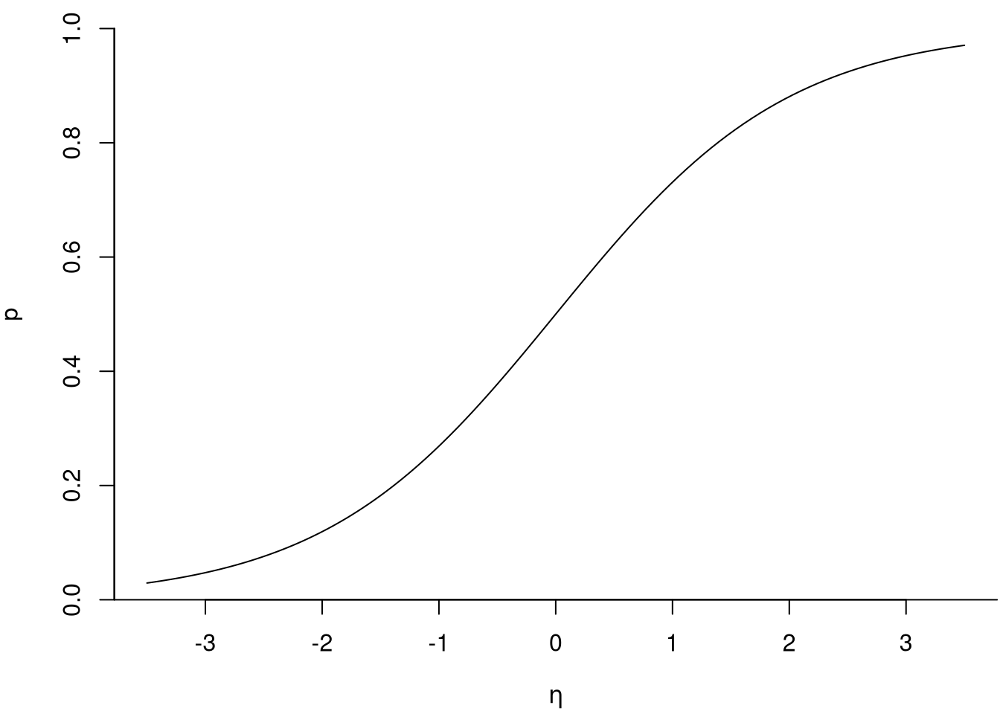
Pour une variable binaire \(Y\), le quotient \(p/(1-p)\) est appelé cote et représente le ratio de la probabilité de succès (\(Y=1\)) sur la probabilité d’échec (\(Y=0\)), \[\begin{align*} \mathsf{cote}(p) = \frac{p}{1-p} = \frac{{\mathsf P}\left(Y=1 \mid \boldsymbol{X}\right)}{{\mathsf P}\left(Y=0 \mid \boldsymbol{X}\right)}. \end{align*}\]
Par exemple, une cote de 4 veut dire qu’il y a 4 fois plus de chance que \(Y\) soit égale à \(1\) par rapport à \(0\). Une cote de 0,25 veut dire le contraire, il y a 4 fois moins de chance que \(Y=1\) par rapport à \(0\) ou bien, de manière équivalente, il y a 4 fois plus de chance que \(Y=0\) par rapport à \(1\). Le Tableau 5.1 donne un aperçu de cotes pour quelques probabilités \(p\).
| \({\mathsf P}\left(Y=1\right)\) | 0.1 | 0.2 | 0.3 | 0.4 | 0.5 | 0.6 | 0.7 | 0.8 | 0.9 |
|---|---|---|---|---|---|---|---|---|---|
| cote | 0.11 | 0.25 | 0.43 | 0.67 | 1 | 1.5 | 2.3 | 4 | 9 |
| \(\frac{1}{9}\) | \(\frac{1}{4}\) | \(\frac{3}{7}\) | \(\frac{2}{3}\) | \(1\) | \(\frac{3}{2}\) | \(\frac{7}{3}\) | \(4\) | \(9\) |
5.3 Estimation des paramètres
5.3.1 Principes de base
On dispose d’un échantillon de taille \(n\) sur les variables \((Y, X_1, \ldots, X_p)\), dans le tableau \[\begin{align*} \begin{pmatrix} x_{11} & x_{12} & \cdots & x_{1p} & y_1 \\ x_{21} & \ddots & \cdots & x_{2p} & y_2 \\ \vdots & \ddots & \ddots & \ddots & \vdots \\ x_{n1} & x_{n2} & \cdots & x_{np} & y_n \\ \end{pmatrix} \end{align*}\] À l’aide de ces observations, on peut estimer les paramètres \(\boldsymbol{\beta} = (\beta_0, \beta_1 ,\ldots, \beta_p)\) du modèle de régression logistique \[\begin{align*} \mathrm{logit}(p) = \ln \left( \frac{p}{1-p}\right) = \beta_0 + \beta_1 X_1 + \cdots + \beta_pX_p. \end{align*}\] On obtient ainsi les estimés des paramètres \(\widehat{\boldsymbol{\beta}}\), desquels découle une estimation de \({\mathsf P}\left(Y=1\right)\) pour les valeurs \(X_1=x_1, \ldots, X_p=x_p\) d’un individu donné, \[\begin{align*} \widehat{p} = \mathrm{expit}(\widehat{\beta}_0 + \cdots + \widehat{\beta}_pX_p). \end{align*}\]
Un modèle ajusté peut ensuite être utilisé pour faire de la classification (prédiction) pour de nouveaux individus pour lesquels la variable réponse \(Y\) n’est pas observée. Pour ce faire, on choisit un point de coupure \(c\) (souvent $c=$0,5 mais pas toujours) et on classifie les observations en deux groupes:
- Si \(\widehat{p}< c\), alors \(\widehat{Y}=0\) (c’est-à-dire, on assigne cette observation à la catégorie 0).
- Si \(\widehat{p} \geq c\), alors \(\widehat{Y}=1\) (c’est-à-dire, on assigne cette observation à la catégorie 1).
On reviendra en détail sur cet aspect dans une section suivante.
La méthode d’estimation des paramètres habituellement utilisée est la méthode du maximum de vraisemblance. Pour les applications, il est suffisant de savoir manipuler trois quantités importantes: la log-vraisemblance, le \(\mathsf{AIC}\) et le \(\mathsf{BIC}\). Les deux critères d’information, que nous avons couvert dans les chapitres précédents, servent à la sélection de modèles tandis que la log-vraisemblance \(\ell\) servira à construire un test d’hypothèse.
5.3.2 Méthode du maximum de vraisemblance
Cette sous-section est facultative. Elle donne plus de détails sur la méthode du maximum de vraisemblance et les quantités en découlant (soit \(\mathsf{AIC}\), \(\mathsf{BIC}\) et \(\ell(\widehat{\boldsymbol{\beta}})\)).
La méthode du maximum de vraisemblance (maximum likelihood) est possiblement la méthode d’estimation la plus utilisée en statistique. En général, pour un échantillon donné et un modèle avec des paramètres inconnus \(\boldsymbol{\theta}\), on peut calculer la « probabilité » d’avoir obtenu les observations de notre échantillon selon les paramètre. Si on traite cette « probabilité » comme étant une fonction des paramètres du modèle, \(\boldsymbol{\theta}\), on l’appelle alors la vraisemblance (likelihood). La méthode du maximum de vraisemblance consiste à trouver les valeurs des paramètres qui maximisent la vraisemblance. On cherche donc les estimations qui sont les plus vraisemblables étant donné nos observations.
En pratique, il est habituellement plus simple de chercher à maximiser le log de la vraisemblance (ce qui revient au même car le log est une fonction croissante) et on nomme cette fonction la log-vraisemblance (log-likelihood).
Vous connaissez déjà des exemples d’estimateurs du maximum de vraisemblance. La moyenne d’un échantillon est l’estimateur du maximum de vraisemblance pour la moyenne de la population \(\mu\) si les observations représentent un échantillon aléatoire simple tiré d’une loi normale.
Dans le cas d’un modèle de régression linéaire multiple \(Y = \beta_0 + \sum_{j=1}^p \beta_jX_j + \varepsilon\) avec les erreurs \(\varepsilon\sim \mathcal{N}(0, \sigma^2)\) des termes indépendants et identiquement distributions, la log-vraisemblance du modèle pour un échantillon de taille \(n\) est \[\begin{align*} \ell(\boldsymbol{\beta}, \sigma^2) =- \frac{n}{2} \ln(2\pi\sigma^2) - \frac{1}{2\sigma^2}\sum_{i=1}^n (Y_i- \beta_0 - \beta_1 X_{1i} - \cdots - \beta_pX_{ip})^2. \end{align*}\] Puisque le premier terme ne dépend pas des paramètres \(\boldsymbol{\beta}\), il est clair que maximiser cette fonction de \(\boldsymbol{\beta}\) revient à minimiser \(\sum_{i=1}^n (Y_i- \beta_0 - \beta_1 X_{1i} - \cdots - \beta_pX_{ip})^2\), et ce critère est exactement le même que celui des moindres carrés. Par conséquent, les estimations des paramètres \(\boldsymbol{\beta}\) provenant de la méthode des moindres carrés peuvent être vues comme étant des estimateurs du maximum de vraisemblance sous l’hypothèse de normalité des observations; il est même possible d’écrire une formule explicite pour ces estimations.
Dans le cas de la régression logistique, la fonction de log-vraisemblance s’écrit \[\begin{align*} \ell(\boldsymbol{\beta}) &= \sum_{i=1}^n Y_i ( \beta_0 + \beta_1 X_{i1} + \cdots + \beta_p X_{ip}) \\&- \sum_{i=1}^n \ln\left\{1+\exp(\beta_0 + \cdots + \beta_pX_{ip})\right\} \end{align*}\]
Contrairement au cas de la régression linéaire, on ne peut trouver une fonction explicite pour les valeurs des paramètres qui maximisent cette fonction. Des méthodes numériques doivent alors être utilisées pour l’optimisation. Une fois la maximisation accomplie, on obtient les estimés du maximum de vraisemblance, \(\widehat{\boldsymbol{\beta}}\). On peut alors calculer la valeur maximale (numérique) de la log-vraisemblance, \(\ell(\widehat{\boldsymbol{\beta}})\). La quantité \(-2\ell(\widehat{\boldsymbol{\beta}})\) (-2 Log L) est rapportée dans les sorties SAS. Par analogie avec la régression linéaire la valeur de la log-vraisemblance évaluée à \(\widehat{\boldsymbol{\beta}}\), \(\ell(\widehat{\boldsymbol{\beta}})\), augmente toujours lorsqu’on ajoute des régresseurs et c’est pourquoi on ne pourra pas l’utiliser comme outil de sélection de variables.
Les critères d’information sont des fonctions de la log-vraisemblance, mais incluent une pénalité pour le nombre de coefficients \(\boldsymbol{\beta}\), \[\begin{align*} \mathsf{AIC} & = -2 \ell(\widehat{\boldsymbol{\beta}}) + 2(p+1)\\ \mathsf{BIC} & = -2 \ell(\widehat{\boldsymbol{\beta}}) + \ln(n)(p+1) \end{align*}\]
Ces définitions sont utilisables dans plusieurs situations lorsque le modèle est ajusté par la méthode du maximum de vraisemblance. En particulier, elles sont utilisées par SAS en régression logistique. Tout comme en régression linéaire et en analyse factorielle, ces deux critères pourront être utilisés pour faire de la sélection de modèles si on calcule les estimateurs du maximum de vraisemblance.
5.4 Exemple du Professional Rodeo Cowboys Association
L’exemple suivant est inspiré de l’article
Daneshvary, R. et Schwer, R. K. (2000) The Association Endorsement and Consumers’ Intention to Purchase. Journal of Consumer Marketing 17, 203-213.
Dans cet article, les auteurs cherchent à voir si le fait qu’un produit soit recommandé par le Professional Rodeo Cowboys Association (PRCA) a un effet sur les intentions d’achats. On dispose de 500 observations sur les variables suivantes:
- \(Y\): seriez-vous intéressé à acheter un produit recommandé par le PRCA
- \(\texttt{0}\): non
- \(\texttt{1}\): oui
- \(X_1\): quel genre d’emploi occupez-vous?
- \(\texttt{1}\): à la maison
- \(\texttt{2}\): employé
- \(\texttt{3}\): ventes/services
- \(\texttt{4}\): professionnel
- \(\texttt{5}\): agriculture/ferme
- \(X_2\): revenu familial annuel
- \(\texttt{1}\): moins de 25 000
- \(\texttt{2}\): 25 000 à 39 999
- \(\texttt{3}\): 40 000 à 59 999
- \(\texttt{4}\): 60 000 à 79 999
- \(\texttt{5}\): 80 000 et plus
- \(X_3\): sexe
- \(\texttt{0}\): homme
- \(\texttt{1}\): femme
- \(X_4\): avez-vous déjà fréquenté une université?
- \(\texttt{0}\): non
- \(\texttt{1}\): oui
- \(X_5\): âge (en années)
- \(X_6\): combien de fois avez-vous assisté à un rodéo au cours de la dernière année?
- \(\texttt{1}\): 10 fois ou plus
- \(\texttt{2}\): entre six et neuf fois
- \(\texttt{3}\): cinq fois ou moins
Le but est d’examiner les effets de ces variables sur l’intentions d’achat (\(Y\)). Les données se trouvent dans le fichier logit1.sas7bdat.
5.4.1 Modèle avec une seule variable explicative
Faisons tout d’abord une analyse en utilisant seulement \(X_5\) (âge) comme variable explicative. L’ajustement du modèle de régression incluant uniquement \(X_5\) sera effectuée en exécutant le programme
proc logistic data=multi.logit1 ;
model y(ref='0') = x5 / clparm=pl clodds=pl expb;
run;La syntaxe y(ref='0') sert à spécifier la catégorie de référence, zéro, de la variable réponse \(Y\): le modèle décrit donc \({\mathsf P}\left(y=1 \mid X_5\right)\).
Voici une partie de la sortie
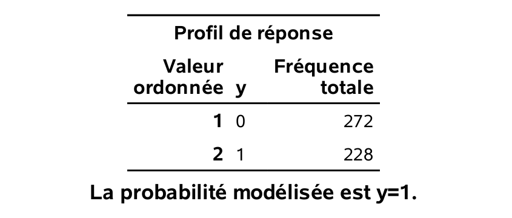
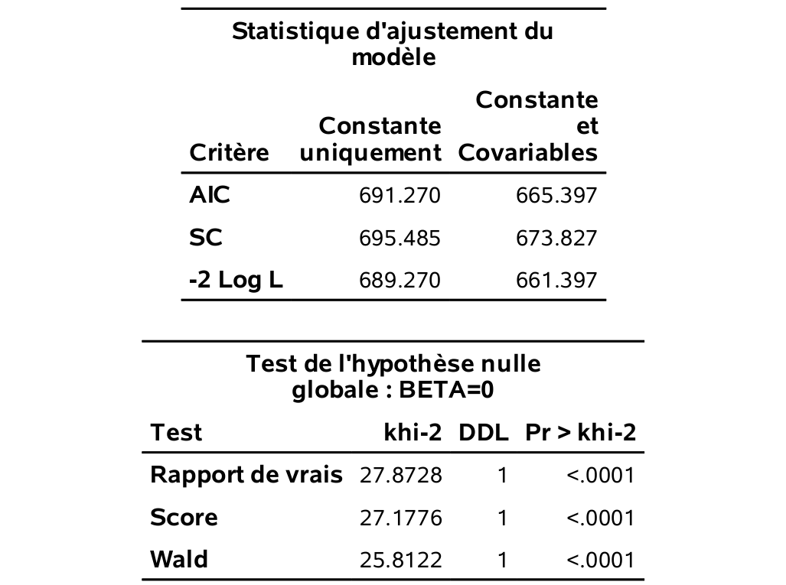
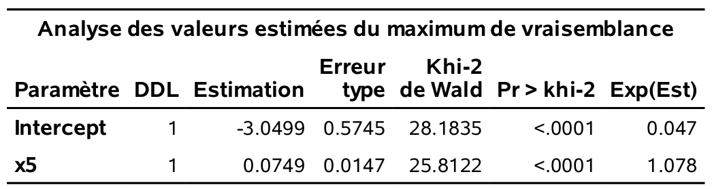
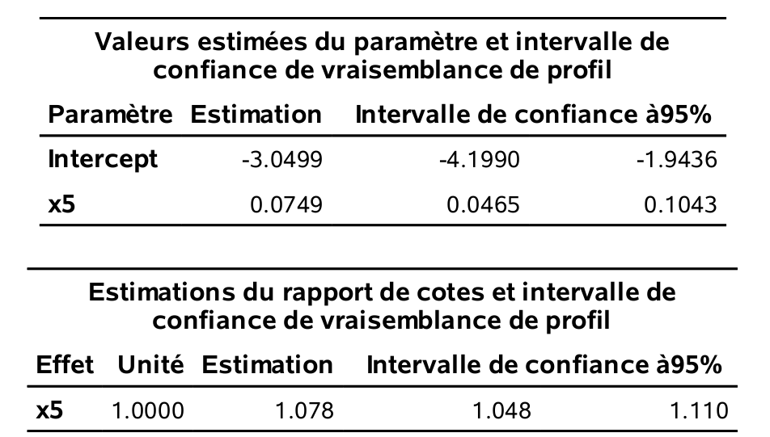
On voit qu’il y a 272 personnes (\(\texttt{0}\)) qui ne sont pas intéressées à acheter un produit recommandé par le PRCA et 228 personnes (\(\texttt{1}\)) qui le sont.
Les estimés des paramètres sont \(\widehat{\beta}_0 = -3.05\) et \(\widehat{\beta}_{\texttt{age}}=0.0749\).
Un intervalle de confiance de niveau 95% pour l’effet de l’âge est [\(0.0465; 0.1043\)].
Le modèle ajusté est \(\mathrm{logit}\{{\mathsf P}\left(Y=1 \mid X_5=x_5\right)\} = -3.05 + 0.0749 x_5\). On peut également exprimer ce modèle directement en terme de la probabilité de succès, \[\begin{align*} {\mathsf P}\left(Y=1 \mid X_5=x_5\right) &= \mathrm{expit}(-3.05 + 0.0749 x_5) \\&= \frac{1}{1+\exp(-3.05 - 0.0749 x_5)} \end{align*}\] Le graphe de cette fonction pour \(X_5\) allant de 18 à 59 ans, respectivement les valeurs minimales et maximales observées dans l’échantillon, montre que le lien entre l’âge et \(p\) est presque linéaire entre 20 et 60 ans. On décèle tout de même la forme sigmoide de la fonction \(\mathrm{logit}\) aux deux extrémités. 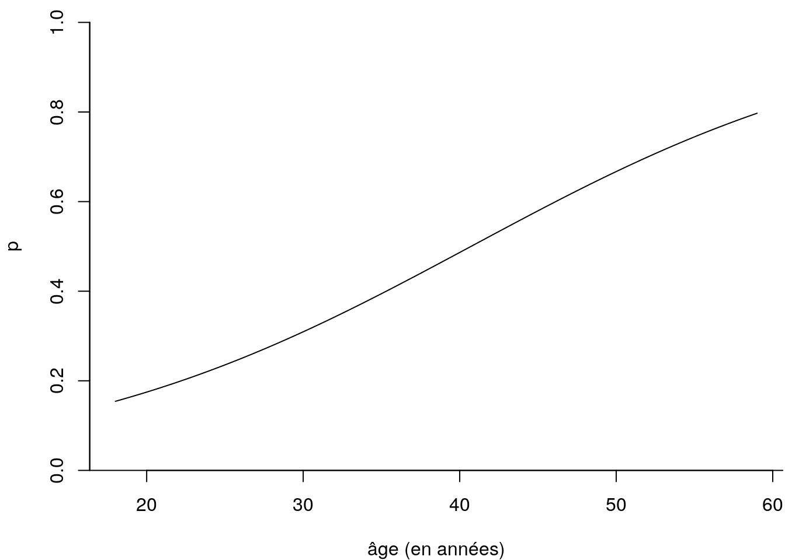
La valeur-\(p\) pour \(\widehat{\beta}_{\texttt{age}}\) (
Pr > khi-2), correspondant aux test des hypothèses \(\mathcal{H}_0: \beta_{\texttt{age}}=0\) versus \(\mathcal{H}_1: \beta_{\texttt{age}} \neq 0\), est plus petite que \(10^{-4}\) et donc l’effet de la variable âge est statistiquement différent de zéro. Plus l’âge augmente, plus la probabilité d’être intéressé à acheter un produit recommandé par le PRCA augmente.Le tableau
Test de l'hypothèse nulle globale : BETA=0contient les résultats de trois tests pour l’hypothèse nulle que tous les paramètres sont nuls, contre l’alternative qu’au moins un des paramètres est différent de zéro. Comme il y a un seul paramètre ici, ces tests reviennent à tester l’effet de la variable âge. Le test de Wald est le même que celui que nous venons de voir dans le tableau des coefficients.
5.4.2 Interprétation du paramètre
Si une variable est modélisée à l’aide d’un seul paramètre (pas de terme quadratique et pas d’interaction avec d’autre covariables), une valeur positive du paramètre indique une association positive avec \(p\) alors qu’une valeur négative indique le contraire.
Ainsi, le signe du paramètre donne le sens de l’association. Si le coefficient \(\beta_j\) de la variable \(X_j\) est positif, alors plus la variable augmente, plus \({\mathsf P}\left(Y=1\right)\) augmente. Inversement, Si le coefficient \(\beta_j\) est négatif, plus la variable augmente, plus \({\mathsf P}\left(Y=1\right)\) diminue.
En régression linéaire, l’interprétation de coefficient \(\beta_j\) est simple: lorsque la variable \(X_j\) augmente de un, la variable \(Y\) augmente en moyenne de \(\beta_j\), toute chose étant égale par ailleurs. Cette interprétation ne dépend pas de la valeur de \(X_j\). En régression logistique, comme le modèle est nonlinéaire en fonction de \({\mathsf P}\left(Y=1\right)\) (courbe sigmoide), l’augmentation ou la dimininution de \({\mathsf P}\left(Y=1\mid \boldsymbol{X}\right)\) pour un changement d’une unité de \(X_j\) dépend de la valeur de cette dernière. C’est pourquoi il est parfois plus utile d’utiliser la cote pour interpréter globalement l’effet d’une variable.
Dans notre exemple, on peut exprimer le modèle ajusté en termes de cote, \[\begin{align*} \frac{{\mathsf P}\left(Y=1 \mid X_5=x_5\right)}{{\mathsf P}\left(Y=0 \mid X_5=x_5\right)} = \exp(-3.05)\exp(0.0749x_5). \end{align*}\] Ainsi, lorsque \(X_5\) augmente d’une année, la cote est multipliée par \(\exp(0.0749) = 1.078\) peut importe la valeur de \(x_5\). Pour deux personnes dont la différence d’âge est un an, la cote de la personne plus âgée est 7.8% plus élevée. On peut aussi quantifier l’effet d’une augmentation d’un nombre d’unités quelconque. Par exemple, pour chaque augmentation de 10 ans de \(X_5\), la cote est multiplié par \(1.078^{10} = 2.12\), soit une augmentation de 112%.
La cote est rapportée à la dernière colonne du tableau des coefficients. En général, si on veut une interprétation globale de l’effet d’une variable, il faudra baser l’interprétation sur l’exponentielle du coefficient, \(\exp(\widehat{\beta})\). SAS dénomme cette quantité rapport de cote (odds ratio).
Un des avantages d’utiliser la vraisemblance comme fonction objective est que les intervalles de confiance et les estimateurs basés sur la vraisemblance (profilée) sont invariant aux reparametrisations. Ainsi, l’intervalle de confiance à niveau 95% pour \(\exp(\beta_{\texttt{age}})\) est obtenu en prenant l’exponentielle des bornes de l’intervalle pour \(\beta_{\texttt{age}}\), [\(\exp(0.0465); \exp(0.1043)\)], soit [\(1.048; 1.110\)] tel que rapporté dans la sortie. Ce n’est pas le cas des intervalles de Wald qui ont la forme \(\widehat{\beta} \pm 1.96 \mathrm{se}(\widehat{\beta})\). Comme l’exponentielle est une transformation monotone croissante, on a \(\beta>0\) si et seulement si \(\exp(\beta)>1\), etc. On peut ainsi utiliser les intervalles de confiance pour tester l’hypothèse \(\mathcal{H}_0: \beta_j=0\) ou de façon équivalente \(\mathcal{H}_0: \exp(\beta_j)=1\) à niveau 95%.
5.4.3 Modèle avec toutes les variables explicatives
Ajustons à présent le modèle avec toutes les variables explicatives. Rappelez-vous que la variable \(X_1\) (quel genre d’emploi occupez-vous) a cinq catégories, \(X_2\) (revenu familial annuel) a cinq catégories, et \(X_6\) (combien de fois avez-vous assisté à un rodéo au cours de la dernière année) a trois catégories. Il faut donc spécifier à SAS de les traiter comme des variables catégorielles dans le modèle. Notez qu’on pourrait aussi traiter \(X_2\) comme continue car elle est ordinale et possède tout de même cinq modalités, mais on la traitera comme variable nominale.
proc logistic data=multi.logit1 ;
class x1(ref=last) x2(ref=last) x6 / param=ref;
model y(ref='0') =x1-x6 / clparm=pl clodds=pl expb;
run;Dans SAS, les variables incluses dans la commande class sont modélisées à l’aide d’un ensemble de variables indicatrices. Cette commande nous évite de créer nous-même les indicatrices; cette option est disponible dans la plupart des procédures SAS, bien que la procédure reg est une exception notable.
On peut changer la catégorie de référence (ref=) qui est par défaut la dernière modalité (en ordre alphanumérique). L’option param=ref pour class permet d’imprimer un tableau indiquant le code pour les variables indicatrices.
Les variables incluses dans la commande class sont modélisées à l’aide d’un ensemble de variables indicatrices. Prenons l’exemple de la variable \(X_1\): la modalité de référence est (), soit agriculture est spécifiée dans le tableau Informations sur les niveaux de classe.
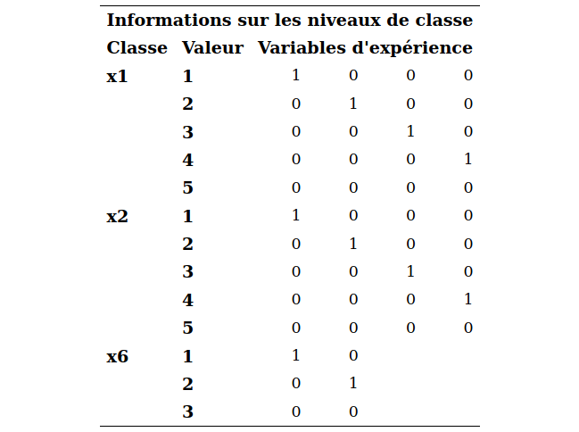
Le fichier logit1_intro.sas contient le code pour ajuster le même modèle sans la commande class, c’est-à-dire en créant nous-mêmes les variables indicatrices pour inclure les variables explicatives catégorielles. Vous pouvez l’exécuter afin de vous convaincre qu’il s’agit du même modèle. Les estimés seront les mêmes.
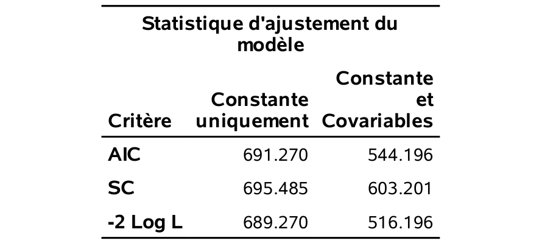 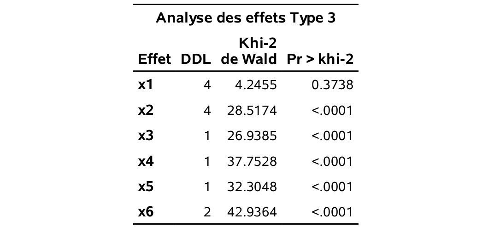 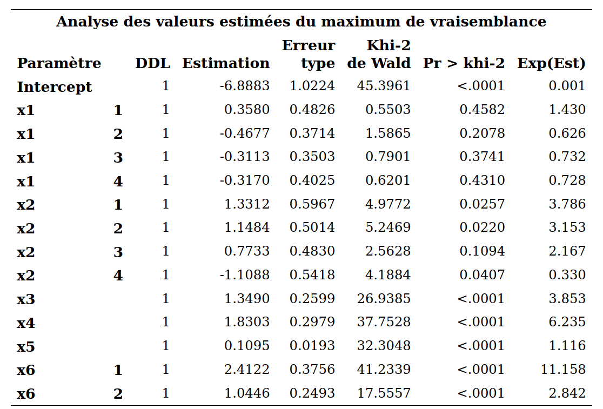 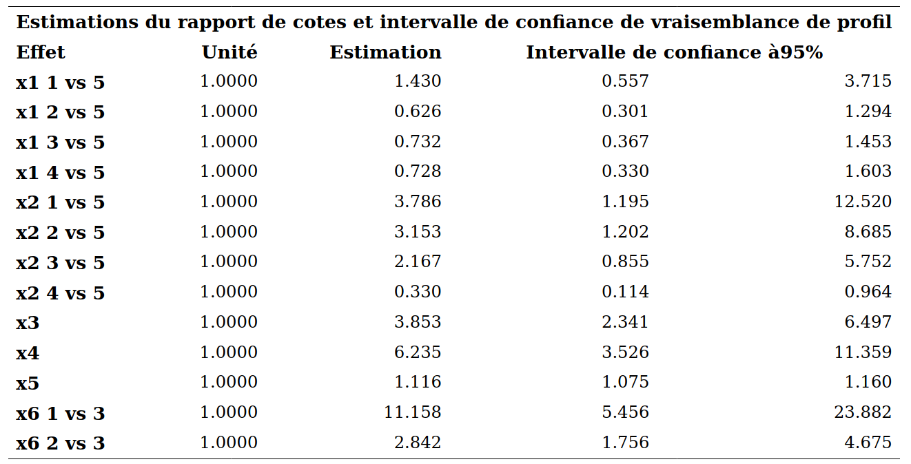 Le modèle ajusté est \[\begin{align*} \mathrm{logit}\{{\mathsf P}\left(Y=1 \mid \boldsymbol{X}=\boldsymbol{x}\right)\} &= -6.89 + 0.36{\mathbf 1}_{X_1=1} - 0.47{\mathbf 1}_{X_1=2} - 0.31{\mathbf 1}_{X_1=3} - 0.32{\mathbf 1}_{X_1=4} \\& \qquad + 1.33{\mathbf 1}_{X_2=1} + 1.15{\mathbf 1}_{X_2=2} + 0.77{\mathbf 1}_{X_2=3} - 1.11{\mathbf 1}_{X_2=4} \\&\qquad + 1.35X_3+ 1.83X_4 + 0.11X_5 + 2.41{\mathbf 1}_{X_6=1} + 1.04{\mathbf 1}_{X_6=2} \end{align*}\]
Notez que les variables \({\mathbf 1}_{X_1=1}\) (x11), \({\mathbf 1}_{X_1=21}\) (x12), \({\mathbf 1}_{X_1=3}\) (x13) et \({\mathbf 1}_{X_1=4}\) (x14) représentent les quatre indicatrices pour la variable \(X_1\) (et de même pour \(X_2\) et \(X_6\)). L’interprétation se fait comme en régression linéaire multiple. Ici, il n’y a pas de terme quadratique, ni d’interaction. Les paramètres estimés représentent donc l’effet de la variable correspondante sur le logit une fois que les autres variables sont dans le modèle, et demeurent fixes.
Prenons le coefficient associé à l’âge (\(X_5\)) comme exmple. Le paramètre estimé est \(\widehat{\beta}_{\texttt{age}}=0.1095\) et il est significativement différent de zéro. Ainsi, plus l’âge augmente, plus \({\mathsf P}\left(Y=1\mid \boldsymbol{X}\right)\) augmente, toutes autres choses étant égales par ailleurs. Pour chaque augmentation d’un an de \(X_5\), la cote est multipliée par \(\exp(0.1095)=1.116\), lorsque les autres variables demeurent fixes.
N’oubliez pas la nuance suivante concernant l’interprétation d’un test lorsque plusieurs variables explicatives font partie du modèle. Si un paramètre n’est pas significativement différent de zéro, cela ne veut pas dire qu’il n’y a pas de lien entre la variable correspondante et \(Y\). Cela veut seulement dire qu’il n’y a pas de lien significatif une fois que les autres variables sont dans le modèle.
Prenons l’exemple de la variable \(X_6\), qui représente le nombre de fois où l’individu a assisté à un rodéo au cours de la dernière année. Cette variable est modélisée à l’aide de deux variables indicatrices, \({\mathbf 1}_{X_6=1}\) égale à un si \(X_6=1\) et zéro autrement, et \({\mathbf 1}_{X_6=2}\) égale à un si \(X_6=2\) et zéro sinon. La catégorie de référence est \(X_6=3\), c’est-à-dire les personnes ayant assisté cinq fois ou moins à un rodéo au cours de la dernière année. Pour tester la significativité globale d’une variable catégorielle qui est modélisée avec plusieurs indicatrices, il faut aller dans le tableau Analyse des effets Type 3. On voit que la statistique de test est \(42.9364\) et que la valeur-\(p\) associée est négligeable: la variable \(X_6\) est donc globalement significative. En fait, il s’agit du test conjoint sur toutes les indicatrices associées à cette variable. Plus précisément, il s’agit du test de l’hypothèse nulle \(\mathcal{H}_0: \beta_{6_{\texttt{1}}}=\beta_{6_{\texttt{2}}}=0\) versus la contre-hypothèse qu’au moins un de ces deux paramètres est différent de zéro.
L’interprétation des variables catégorielles est analogue à celle faite en régression linéaire. On peut aussi interpréter individuellement les paramètres des indicatrices: pour \({\mathbf 1}_{X_6=1}\), lorsque les autres variables demeurent fixes, les personnes ayant assisté 10 fois ou plus à un rodéo au cours de la dernière année voient leur cote multipliée par \(\exp(2.4122)=11.158\) par rapport aux personnes ayant assisté cinq fois ou moins. Ce paramètre est significativement différent de zéro car sa valeur-\(p\) est négligeable (tableau Analyse des valeurs estimées du maximum de vraisemblance); l’intervalle de confiance à 95% pour le rapport de cotes, basé sur la vraisemblance profilée, est [\(5.456; 23.882\)] et un n’est pas dans l’intervalle. Ainsi, il y a une différence significative entre les gens qui ont assisté à 10 rodéos ou plus et les gens qui ont assisté à 5 rodéos ou moins, pour ce qui est de l’intérêt à acheter un produit recommandé par le PRCA.
On procède de la même façon pour \({\mathbf 1}_{X_6=2}\): lorsque les autres variables demeurent fixes, les personnes ayant assisté entre six et neuf fois à un rodéo au cours de la dernière année voient leur cote multipliée par \(2,842\) par rapport aux personnes ayant assisté cinq fois ou moins. Ce paramètre est aussi significativement différent de zéro. Il y a donc une progression. Plus une personne a assisté à un grand nombre de rodéo au cours de la dernière année, plus elle est intéressée à acheter un produit recommandé par la PRCA.
Si on désire comparer les deux modalités \(X_6=1\) et \(X_6=2\), il suffit de changer la modalité de référence dans la commande class et d’exécuter le modèle à nouveau. Une alternative est de calculer le rapport (de rapport) de cotes pour ces deux modalités.
5.4.4 Test du rapport de vraisemblance
Les tests correspondants aux valeurs-\(p\) dans le tableau des paramètres sont des tests de Wald. Ces tests feront l’affaire dans la plupart des applications. Par contre, il existe un autre test qui est généralement plus puissant, c’est-à-dire qu’il sera meilleur pour détecter que \(\mathcal{H}_0\) n’est pas vraie lorsque c’est effectivement le cas. Ce test est le test du rapport de vraisemblance (likelihood ratio test). Il découle de la méthode d’estimation du maximum de vraisemblance et est donc généralement applicable lorsqu’on estime les paramètres avec cette méthode. Il est basé sur la quantité \(\ell\) que nous avons vue plus tôt.
La procédure consiste à ajuster deux modèles emboîtés:
- Le premier modèle, le modèle complet, contient tous les paramètres et l’estimateur du maximum de vraisemblance \(\widehat{\boldsymbol{\beta}})\).
- Le deuxième modèle correspondant à l’hypothèse nulle \(\mathcal{H}_0\), le modèle réduit, contient tous les paramètres avec les restrictions imposées sous \(\mathcal{H}_0\); on dénote l’estimateur du maximum de vraisemblance \(\widehat{\boldsymbol{\beta}}_0\)
Le test est basé sur la statistique
\[\begin{align*}
D = -2\{\ell(\widehat{\boldsymbol{\beta}}_0)-\ell(\widehat{\boldsymbol{\beta}})\}
\end{align*}\]
ou la différence entre -2 Log L pour le modèle réduit et -2 Log L pour le modèle complet. Cette différence \(D\), lorsque l’hypothèse \(\mathcal{H}_0\) est vraie suit approximativement une loi khi-deux avec un nombre de degrés de liberté égal au nombre de paramètre testé (le nombre de restrictions sous \(\mathcal{H}_0\)). On peut donc calculer la valeur-\(p\) en utilisant la distribution du khi-deux.
Prenons comme exemple le test de la significativité de \(X_6\), qui est modélisée à l’aide deux variables binaires \({\mathbf 1}_{X_6=1}\) et \({\mathbf 1}_{X_6=2}\) et dont les paramètres correspondants sont \(\beta_{6_{\texttt{1}}}\) et \(\beta_{6_{\texttt{2}}}\). Nous avons déjà étudié la sortie pour le test de Wald de significativité globale de \(X_6\), soit le test de l’hypothèse \(\mathcal{H}_0: \beta_{6_{\texttt{1}}}=\beta_{6_{\texttt{2}}}=0\) versus l’alternative qu’au moins un de ces deux paramètres est différent de zéro. La statistique de test (de Wald) est \(42.93\) et la valeur-\(p\) est moins de \(10^{-4}\). Pour effectuer le test du rapport de vraisemblance, il suffit de retirer la variable \(X_6\) et de réajuster le modèle à nouveau avec toutes les autres variables; cette manipulation est effectuée dans logit1_intro.sas. On obtient donc
-2 Log L de 516,196 pour le modèle complet sans contrainte et \(566.447\) pour le modèle excluant la variable \(X_6\).
La différence \(D = 566.447 - 516.196 = 50.25\). Il s’agit de la statistique du test de rapport de vraisemblance. La valeur-\(p\) peut-être obtenue de la loi du khi-deux avec 2 degrés de liberté via le code suivant permet d’imprimer la valeur-\(p\), qui est \(1.22 \times 10^{-11}\).
data pval;
pval=1-CDF('CHISQ', 566.447 - 516.196, 2);
run;
proc print data=pval;
run;Comme la statistique du test de rapport de vraisemblance \(D=50.25\) est encore plus grande est encore plus grande que la statistique de Wald (\(42.9364\)), qui suit la même loi de probabilité sous \(\mathcal{H}_0\), cela indique que le test du rapport de vraisemblance est encore plus significatif que le test de Wald. Cela ne fait pas de différence ici mais, dans certains cas, il est possible que le test de Wald ne soit pas significatif (valeur-\(p\) plus grande que \(0.05\)) tandis que le test du rapport de vraisemblance le soit (valeur-\(p\) inférieure à \(0.05\)).
5.4.5 Multicolinéarité
Rappelez-vous que le terme multicolinéarité fait référence à la situation où les variables explicatives sont très corrélées entre elles ou bien, plus généralement, à la situation où une (ou plusieurs) variable(s) explicative(s) est (sont) très corrélée(s) à une combinaison linéaire des autres variables explicatives.
L’effet potentiellement néfaste de la multicolinéarité est le même qu’en régression linéaire, c’est-à-dire, elle peut réduire la précision des estimations des paramètres (augmenter leurs écarts-types estimés).
En pratique, le problème est qu’il devient difficile de départager l’effet individuel d’une variable explicative lorsqu’elle est fortement corrélée avec d’autres variables explicatives.
Comme la multicolinéarité est une propriété des variables explicatives (le \(Y\) n’intervient pas) on peut utiliser les mêmes outils qu’en régression linéaire pour tenter de la détecter, par exemple, le facteur d’inflation de la variance (variance inflation factor). Cette quantité ne dépend que des variables explicatives \(\boldsymbol{X}\), pas du modèle ou de la variable réponse.
La multicolinéarité est surtout un problème lorsque vient le temps d’interpréter et tester l’effet des paramètres individuels. Si le but est seulement de faire de la classification (prédiction) et que l’interprétation des paramètres individuels n’est pas cruciale alors il n’y a pas lieu de se soucier de la multicolinéarité. Il faut alors plutôt comparer correctement la performance de classification des modèles en utilisant des méthodes permettant d’obtenir un bon modèle tout en se protégeant contre le surajustement. Certaines de ces méthodes (division de l’échantillon, validation croisée) ont déjà été présentées.
5.5 Classification et prédiction à l’aide de la régression logistique
La finalité du modèle de régression logistique est fréquemment l’obtention de prédictions. Une fois qu’on a ajusté un modèle, on peut l’utiliser pour prévoir la valeur de \(Y\) pour de nouvelles observations. Ceci consiste à assigner une classe (\(0\) ou \(1\)) à ces observations (pour lesquels \(Y\) est inconnue) à partir des valeurs prises par \(X_1, \ldots, X_p\).
Le modèle ajusté nous fournit une estimation de \({\mathsf P}\left(Y=1 \mid \boldsymbol{X}=\boldsymbol{x}\right)\) pour des valeurs \(X_1=x_1, \ldots, X_p=x_p\) données. Cet estimé est \[\begin{align*} \widehat{p} = \frac{1}{1+ \exp\{- ( \widehat{\beta}_0 + \widehat{\beta}_1x_1 + \cdots + \widehat{\beta}_p x_p)\}}. \end{align*}\]
Classification de base: pour classifier des observations, il suffit de choisir un point de coupure \(c\), souvent \(c=0,5\), et de classifier une observation de la manière suivante:
- Si \(\widehat{p} < c\), on assigne cette observation à la catégorie zéro et \(\widehat{Y}=0\).
- Si \(\widehat{p} \geq c\), on assigne cette observation à la catégorie un et \(\widehat{Y}=1\).
Si on prend \(c=0,5\) comme point de coupure, cela revient à assigner l’observation à la classe (catégorie) la plus probable, un choix fort raisonnable. Nous verrons dans une section suivante que, lorsque les conséquences de faussement classifier une observation (succès, mais échec prédit et vice-versa) ne sont pas les mêmes, il peut être avantageux d’utiliser un autre point de coupure.
Dans un cadre de prédiction, il nous faudra un critère pour juger de la qualité de l’ajustement du modèle. Rappelez-vous que pour une réponse continue, nous avons utilisé l’erreur moyenne quadratique, \(\mathsf{EMQ} = \mathsf{E}\{(Y-\widehat{Y})^2\}\), pour juger de la performance d’un modèle. Comme la réponse \(Y\) est binaire ici, nous allons utiliser des critères différents.
Voyons d’abord un premier critère pour juger de la qualité d’un modèle de prédiction. Soit \(Y\) la vraie valeur de la réponse binaire et \(\widehat{Y}\) (soit 0 ou 1) la valeur de \(Y\) prédite par un modèle pour une observation choisie au hasard dans la population. Un premier critère pour juger de la performance d’un modèle est \({\mathsf P}\left(Y \neq\widehat{Y}\right)\), soit la probabilité de mal classifier une observation choisie au hasard dans la population. Ce critère est le taux de mauvaise classification. Plus \({\mathsf P}\left(Y \neq\widehat{Y}\right)\) est petite, meilleure est la capacité prédictive du modèle.
Tout comme l’erreur moyenne quadratique, on ne peut pas calculer exactement le taux de mauvaise classification; tout au plus peut-on l’estimer. Pour les raisons vues au chapitre précédent, l’estimer en calculant le taux de mauvaise classification des observations ayant servi à l’ajustement du modèle sans aucune correction n’est pas une bonne approche. Les approches couvertes dans le dernier chapitre pour l’estimation de l’erreur moyenne quadratique, telles la validation-croisée et la division de l’échantillon, peuvent être utilisées pour estimer le taux de mauvaise classification \({\mathsf P}\left(Y \neq \widehat{Y}\right)\).
Cette utilisation d’un modèle de régression logistique sera illustrée avec l’exemple que nous avons traité au chapitre précédent: notre objectif final est de construire un modèle avec les 1000 clients de l’échantillon d’apprentissage et cibler ensuite lesquels des 100 000 clients restants seront choisis pour recevoir le catalogue. Les variables cibles sont:
yachat: variable binaire égale à un si le client a acheté quelque chose dans le catalogue et zéro sinon.ymontant: le montant de l’achat si le client a acheté quelque chose
Les 10 variables suivantes sont disponibles pour tous les clients et serviront de variables explicatives,
x1: sexe de l’individu, soit homme (0) ou femme (1);x2: l’âge (en année);x3: variable catégorielle indiquant le revenu, soit moins de 35 000$ (1), entre 35 000$ et 75 000$ (2) ou plus de 75 000$ (3);x4: variable catégorielle indiquant la région où habite le client (de 1 à 5);x5: conjoint : le client a-t-il un conjoint, soit oui (1) ou non (0);x6: nombre d’année depuis que le client est avec la compagnie;x7: nombre de semaines depuis le dernier achat;x8: montant (en dollars) du dernier achat;x9: montant total (en dollars) dépensé depuis un an;x10: nombre d’achats différents depuis un an.
Dans le chapitre précédent, nous avons cherché à développer un modèle pour prévoir ymontant, le montant dépensé, étant donné que le client achète quelque chose. Cette fois-ci, nous allons travailler avec la variable yachat, qui est binaire, à l’aide de la régression logistique.
Afin d’introduire différentes notions, nous allons, dans un premier temps, utiliser les 10 variables de base. À partir de la section suivante, nous chercherons à optimiser le modèle en considérant les interactions d’ordre deux. Pour ce faire, nous utiliserons des méthodes de sélections de variables. Les commandes se trouvent dans le fichier logit2_classification_base.sas. Dans le code qui suit, le fichier train contient les 1000 clients de l’échantillon d’apprentissage et le fichier test contient les 100 000 clients pour lesquels on veut prédire l’intention d’achat.
proc logistic data=train;
model yachat(ref='0') = x1x2 x3 x32 x41-x44 x5-x10;
output out=pred predprobs=crossvalidate;
run;Le modèle utilise seulement les 10 variables de base (en fait 14 avec les indicatrices pour les variables catégorielles). Des prévisions pour les clients restants seront exportées dans le fichier pred, grâce à la commande score. L’option ctable permet d’obtenir la Table de classification (sic). Tel que nous l’avons vu au chapitre précédent, il y a 210 clients qui ont acheté quelque chose parmi les 1000. Le tableau de classification contient des estimations de plusieurs quantités intéressantes, en faisant varier le point de coupure (Niveau de proba). Pour chaque point de coupure, ces estimations ont été obtenues à l’aide d’une approximation de la méthode de validation croisée à \(n\) groupes (en anglais, leave-one-out cross-validation, ou LOOCV). Ainsi, ces estimations sont valides car elles ne sont pas obtenues en utilisant les mêmes observations que celles qui ont servi à estimer le modèle.
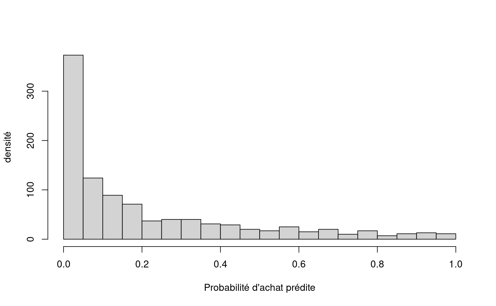
| coupe | VP | VN | FP | FN | correct (%) | sensibilité (%) | spécificité (%) | FP (%) | FN (%) |
|---|---|---|---|---|---|---|---|---|---|
| 0.02 | 210 | 209 | 581 | 0 | 41.9 | 100.0 | 26.5 | 73.5 | 0.0 |
| 0.04 | 207 | 320 | 470 | 3 | 52.7 | 98.6 | 40.5 | 69.4 | 0.9 |
| 0.06 | 201 | 398 | 392 | 9 | 59.9 | 95.7 | 50.4 | 66.1 | 2.2 |
| 0.08 | 199 | 451 | 339 | 11 | 65.0 | 94.8 | 57.1 | 63.0 | 2.4 |
| 0.10 | 193 | 480 | 310 | 17 | 67.3 | 91.9 | 60.8 | 61.6 | 3.4 |
| 0.12 | 191 | 512 | 278 | 19 | 70.3 | 91.0 | 64.8 | 59.3 | 3.6 |
| 0.14 | 184 | 547 | 243 | 26 | 73.1 | 87.6 | 69.2 | 56.9 | 4.5 |
| 0.16 | 176 | 572 | 218 | 34 | 74.8 | 83.8 | 72.4 | 55.3 | 5.6 |
| 0.18 | 172 | 598 | 192 | 38 | 77.0 | 81.9 | 75.7 | 52.7 | 6.0 |
| 0.20 | 164 | 611 | 179 | 46 | 77.5 | 78.1 | 77.3 | 52.2 | 7.0 |
| 0.22 | 162 | 626 | 164 | 48 | 78.8 | 77.1 | 79.2 | 50.3 | 7.1 |
| 0.24 | 158 | 639 | 151 | 52 | 79.7 | 75.2 | 80.9 | 48.9 | 7.5 |
| 0.26 | 153 | 645 | 145 | 57 | 79.8 | 72.9 | 81.6 | 48.7 | 8.1 |
| 0.28 | 150 | 657 | 133 | 60 | 80.7 | 71.4 | 83.2 | 47.0 | 8.4 |
| 0.30 | 143 | 667 | 123 | 67 | 81.0 | 68.1 | 84.4 | 46.2 | 9.1 |
| 0.32 | 138 | 679 | 111 | 72 | 81.7 | 65.7 | 85.9 | 44.6 | 9.6 |
| 0.34 | 134 | 695 | 95 | 76 | 82.9 | 63.8 | 88.0 | 41.5 | 9.9 |
| 0.36 | 130 | 699 | 91 | 80 | 82.9 | 61.9 | 88.5 | 41.2 | 10.3 |
| 0.38 | 126 | 708 | 82 | 84 | 83.4 | 60.0 | 89.6 | 39.4 | 10.6 |
| 0.40 | 120 | 715 | 75 | 90 | 83.5 | 57.1 | 90.5 | 38.5 | 11.2 |
| 0.42 | 115 | 723 | 67 | 95 | 83.8 | 54.8 | 91.5 | 36.8 | 11.6 |
| 0.44 | 112 | 731 | 59 | 98 | 84.3 | 53.3 | 92.5 | 34.5 | 11.8 |
| 0.46 | 109 | 736 | 54 | 101 | 84.5 | 51.9 | 93.2 | 33.1 | 12.1 |
| 0.48 | 106 | 739 | 51 | 104 | 84.5 | 50.5 | 93.5 | 32.5 | 12.3 |
| 0.50 | 100 | 744 | 46 | 110 | 84.4 | 47.6 | 94.2 | 31.5 | 12.9 |
| 0.52 | 98 | 748 | 42 | 112 | 84.6 | 46.7 | 94.7 | 30.0 | 13.0 |
| 0.54 | 92 | 750 | 40 | 118 | 84.2 | 43.8 | 94.9 | 30.3 | 13.6 |
| 0.56 | 87 | 753 | 37 | 123 | 84.0 | 41.4 | 95.3 | 29.8 | 14.0 |
| 0.58 | 83 | 761 | 29 | 127 | 84.4 | 39.5 | 96.3 | 25.9 | 14.3 |
| 0.60 | 80 | 766 | 24 | 130 | 84.6 | 38.1 | 97.0 | 23.1 | 14.5 |
| 0.62 | 77 | 769 | 21 | 133 | 84.6 | 36.7 | 97.3 | 21.4 | 14.7 |
| 0.64 | 74 | 771 | 19 | 136 | 84.5 | 35.2 | 97.6 | 20.4 | 15.0 |
| 0.66 | 68 | 772 | 18 | 142 | 84.0 | 32.4 | 97.7 | 20.9 | 15.5 |
| 0.68 | 62 | 774 | 16 | 148 | 83.6 | 29.5 | 98.0 | 20.5 | 16.1 |
| 0.70 | 54 | 775 | 15 | 156 | 82.9 | 25.7 | 98.1 | 21.7 | 16.8 |
| 0.72 | 51 | 777 | 13 | 159 | 82.8 | 24.3 | 98.4 | 20.3 | 17.0 |
| 0.74 | 49 | 778 | 12 | 161 | 82.7 | 23.3 | 98.5 | 19.7 | 17.1 |
| 0.76 | 46 | 778 | 12 | 164 | 82.4 | 21.9 | 98.5 | 20.7 | 17.4 |
| 0.78 | 41 | 781 | 9 | 169 | 82.2 | 19.5 | 98.9 | 18.0 | 17.8 |
| 0.80 | 35 | 783 | 7 | 175 | 81.8 | 16.7 | 99.1 | 16.7 | 18.3 |
| 0.82 | 33 | 783 | 7 | 177 | 81.6 | 15.7 | 99.1 | 17.5 | 18.4 |
| 0.84 | 32 | 783 | 7 | 178 | 81.5 | 15.2 | 99.1 | 17.9 | 18.5 |
| 0.86 | 28 | 784 | 6 | 182 | 81.2 | 13.3 | 99.2 | 17.6 | 18.8 |
| 0.88 | 25 | 786 | 4 | 185 | 81.1 | 11.9 | 99.5 | 13.8 | 19.1 |
| 0.90 | 21 | 787 | 3 | 189 | 80.8 | 10.0 | 99.6 | 12.5 | 19.4 |
| 0.92 | 18 | 787 | 3 | 192 | 80.5 | 8.6 | 99.6 | 14.3 | 19.6 |
| 0.94 | 14 | 788 | 2 | 196 | 80.2 | 6.7 | 99.7 | 12.5 | 19.9 |
| 0.96 | 6 | 788 | 2 | 204 | 79.4 | 2.9 | 99.7 | 25.0 | 20.6 |
| 0.98 | 2 | 790 | 0 | 208 | 79.2 | 1.0 | 100.0 | 0.0 | 20.8 |
Ce tableau contient des estimations de plusieurs quantités intéressantes, en faisant varier le point de coupure (Niveau de proba dans le tableau SAS). Pour chaque point de coupure, ces estimations ont été obtenues à l’aide de la validation-croisée \(n\) observations, soit autant de groupes que d’observations. Ainsi, ces estimations sont valides car elles ne sont pas obtenues en utilisant les mêmes observations que celles qui ont servi à estimer le modèle.
La colonne correct donne une estimation du taux de bonne classification, \({\mathsf P}\left(Y = \widehat{Y}\right) = 1-{\mathsf P}\left(Y \neq \widehat{Y}\right)\), ou de manière équivalente un moins le taux de mauvaise classification.
Avec un point de coupure de \(0\), on classifie toutes les observations à la classe achat (\(1\)), car \(\widehat{p}\) est forcément plus grande que zéro. Le taux de bonne classification dans ce cas de figure sera de \(21\)%, puisque 210 individus ont acheté un produit dans le catalogue dans l’échantillon d’apprentissage. L’autre extrême, avec un point de coupure \(c=1\), donne un taux de bonne classification de \(79\)%.
On peut chercher dans le tableau les points de coupure qui donnent le meilleur taux de bonne classification. Ce dernier est de 84,6% et est atteint par trois points de coupure, soit 0,52, soit 0,6, soit 0,62. Une recherche plus fine donne 0,465 comme point de coupure optimal, avec un taux de mauvaise classification de 15,3%.
La matrice de confusion, qui compare les vraies valeurs avec les prédictions, peut être construite à partir des colonnes Correct - Événement, Correct - Non-événement, Incorrect - Événement, Incorrect - Non-événement. Il y a deux classifications possibles et le tableau contient, en partant du coin supérieur gauche et dans le sens des aiguilles d’une montre, le nombre de vrai positif (\(Y=1\), \(\widehat{Y}=1\)), de faux positif (\(Y=0\), \(\widehat{Y}=1\)), de vrai négatif (\(Y=0\), \(\widehat{Y}=0\)) et finalement de faux négatif (\(Y=1\), \(\widehat{Y}=0\)). Ces nombres proviennent de la validation croisée à \(n\) groupes et ne sont pas ceux qu’on obtiendrait si on appliquait directement le modèle ajusté à notre échantillon. Le taux de classification est \((\mathsf{FP}+\mathsf{FN})/n\).
| \(Y=1\) | \(Y=0\) | |
|---|---|---|
| \(\widehat{Y}=1\) | 109 | 52 |
| \(\widehat{Y}=0\) | 101 | 738 |
Quatre autres quantités, dérivées à partir de la matrice de confusion, sont parfois utilisées:
- la sensibilité (sensitivity), \({\mathsf P}\left(\widehat{Y}=1 \mid Y=1\right)\), ou \(\mathsf{VP}/(\mathsf{VP}+\mathsf{FN})\);
- la spécificité (specificity), \({\mathsf P}\left(\widehat{Y}=0 \mid Y=0\right)\), ou \(\mathsf{VN}/(\mathsf{VN}+\mathsf{FP})\);
- le taux de faux positifs, \({\mathsf P}\left(Y=0 \mid \widehat{Y}=1\right)\), ou \(\mathsf{FP}/(\mathsf{VP}+\mathsf{FP})\);
- le taux de faux négatifs, \({\mathsf P}\left(Y=1 \mid \widehat{Y}=0\right)\), ou \(\mathsf{FN}/(\mathsf{VN}+\mathsf{FN})\).
Les estimés empiriques sont simplement obtenus en calculant les rapports du nombre d’observations dans chaque classe. SAS rapporte ces quantités, mais notez les vieilles versions retournent le taux de faux positifs et de faux négatifs dans les deux dernières colonnes, tandis que les sorties des nouvelles version du logiciel donnent les taux de vrais positifs et de vrais négatifs.
La sensibilité mesure à quel point notre modèle est performant pour détecter un vrai positif (classe 1). La spécificité mesure à quel point notre modèle est performant pour détecter un résultat négatif (classe 0).
Plus le point de coupure augmente, plus la sensibilité et le taux de faux positifs diminuent mais plus la spécificité et le taux de faux négatifs augmentent.
La fonction d’efficacité du récepteur, parfois appelée courbe ROC (receiver operating characteristic) est parfois utilisée pour représenter globalement la performance du modèle. Elle est obtenue avec l’option plots(only)=(roc) dans SAS. Il s’agit du graphe de la sensibilité en fonction de un moins la spécificité, en faisant varier le point de coupure. Un modèle parfait aurait une sensibilité et une spécificité égales à 1 (correspondant au coin supérieur gauche de la fonction d’efficacité du récepteur). Ainsi, plus le couple (\(1-\)spécificité, sensibilité) est près de (\(0\), \(1\)), meilleur est le modèle. Par conséquent, plus la courbe ROC tend vers (\(0\), \(1\)) meilleur est le pouvoir prévisionnel des variables.
L’aire sous la courbe (area under the curve) est souvent utilisée en parallèle est simplement l’aire sous la courbe de la fonction d’efficacité du récepteur. Pour le modèle logistique ajusté, on a une aire sous la courbe de 0,8847. Plus cette valeur est élevée (au plus \(1\)), mieux c’est.
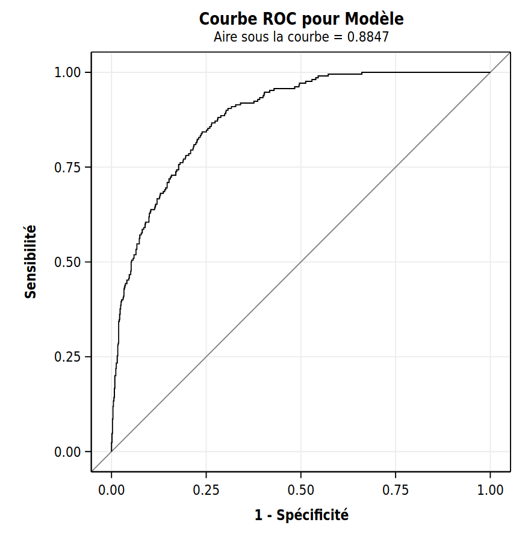
La courbe ROC et la valeur de l’aire sous la courbe (avec l’option plots(only)=(roc)), sont calculées avec les données d’apprentissage et ne sont pas corrigées. Si on veut les utiliser pour comparer des modèles, il faut plutôt utiliser l’option crossvalidate qui permet d’obtenir des estimations des probabilités par validation-croisée avec \(n\) groupes tout comme celle utilisée dans le tableau de classification.
proc logistic data=train;
model yachat(ref='0') = x1 x2 x31 x32 x41-x44 x5-x10;
output out=pred predprobs=crossvalidate;
run;
proc logistic data=pred ;
model yachat(ref='0') = x1 x2 x31 x32 x41-x44 x5-x10;
roc pred=xp_1;
run;On sauvegarde d’abord les probabilités estimées par validation-croisée dans le
fichier pred avec la commande output out=pred predprobs=crossvalidate
La variable xp_1 désigne cette probabilité dans le fichier pred. Ensuite, on
exécute de nouveau la procédure logistic avec ce fichier et la commande roc.
L’aire sous la courbe pour les prédictions avec la validation-croisée à \(n\) groupes est 0,8723: cet estimé est légèrement inférieur à celui obtenu sans
la correction (trop optimiste) qui est 0,8847.

Un autre type de graphe qui est souvent utilisé dans des contextes de gestion est la courbe lift (sic) (en anglais, lift chart). Cette courbe est obtenue en ordonnant les probabilités de succès estimées par le modèle, \(\widehat{p}\), en ordre croissant et en regardant quelle pourcentage de ces derniers seraient bien classifiés (le nombre de vrais positifs sur le nombre de succès).
SAS ne permet pas de la tracer directement, mais le fichier logit3_lift_chart.sas contient une macro SAS qui permet de le faire.
proc logistic data=train;
model yachat(ref='0') = x1 x2 x31 x32 x41-x44 x5-x10;
output out=pred predprobs=crossvalidate;
run;
%liftchart1(pred,yachat,xp_1,10);Ici, le tableau présente les 10 déciles. Si on classifiait comme acheteurs les 10% qui ont la plus forte probabilité estimée d’achat, on détecterait 79 des 210 clients (37,6%). En comparaison, on s’attend que 21 clients soient sélectionnés en moyenne si on prend un échantillon aléatoire de 100 personnes. Le ratio 79/21 (dernière colonne) est le lift du modèle: il permet de détecter 3,76 fois plus de succès que le hasard.
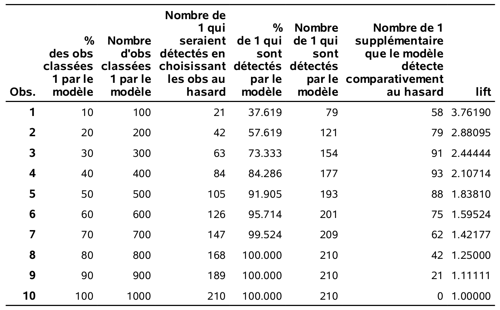
Le graphe 5.1 présente le pourcentage d’observations bien classées parmi les variables (pourcentage des probabilités prédites qui correspondent à un succès parmi les \(k\) plus susceptibles selon le modèle). La référence est la ligne diagonale, qui correspond à une détection aléatoire.
Figure 5.1: Taux de classement en fonction du lift
Il peut être intéressant de vérifier la calibration de notre modèle, et une statistique simple proposée par Spiegelhalter (1986) peut être utile à cette fin. Pour une variable binaire \(Y \in \{0,1\}\), l’erreur moyenne quadratique s’écrit \[\begin{align*} \overline{B} &= \frac{1}{n} \sum_{i=1}^n (Y_i-p_i)^2 =\frac{1}{n} \sum_{i=1}^n(Y_i-p_i)(1-2p_i) + \frac{1}{n} \sum_{i=1}^n p_i(1-p_i). \end{align*}\] Le premier terme représente le manque de calibration du modèle, tandis que le deuxième correspond à la séparation entre variables. Si notre modèle était parfaitement calibré, lalors \(\mathsf{E}_0(Y_i)=p_i\) et \(\mathsf{Var}_0(Y_i) = p_i(1-p_i)\). On peut utiliser ce fait pour construire une statistique de Wald, \(Z = \{\overline{B} - \mathsf{E}_0(\overline{B})\}/\sqrt{\mathsf{Var}_0(\overline{B})}\), où \[\begin{align*} \mathsf{E}_0(\overline{B})&= \frac{1}{n} \sum_{i=1}^n p_i(1-p_i) \\ \mathsf{Var}_0(\overline{B})&= \frac{1}{n^2} \sum_{i=1}^n p_i(1-p_i)(1-2p_i)^2 \end{align*}\]
Sous l’hypothèse nulle de calibration parfaite, \(Z \sim \mathsf{No}(0,1)\) en grand échantillon. Pour le modèle simple avec toutes les covariables, la valeur-\(p\) approximative calculée avec les probabilités de succès obtenues par validation-croisée et les données de l’échantillon d’apprentissage est 0.22 et il n’y a pas de preuve que le modèle est mal calibré. Cette technique est utile pour vérifier s’il n’y a pas de surajustement (auquel cas le modèle tend à retourner des probabilités très près de 0/1, mais qui ne correspondent pas à la réalité).
5.6 Classification avec une matrice de gain
Utiliser le taux de mauvaise classification \({\mathsf P}\left(Y \neq \widehat{Y}\right)\), comme critère de performance, revient au même que d’utiliser le taux de bonne classification \({\mathsf P}\left(Y=\widehat{Y}\right)\), car \({\mathsf P}\left(Y \neq \widehat{Y}\right) = 1-{\mathsf P}\left(Y=\widehat{Y}\right)\). On veut un modèle avec un haut taux de bonne classification (ou un faible taux de mauvaise classification).
Lorsqu’on utilise \({\mathsf P}\left(Y \neq \widehat{Y}\right)\) comme critère pour juger de la qualité d’un modèle prévisionnel, on fait l’hypothèse que le gain associé à bien classifier une observation dans la catégorie 0 lorsqu’elle est réellement dans la catégorie 0 est le même que celui associé à classifier une observation dans la catégorie 1 lorsqu’elle est réellement dans la catégorie 1: cela correspond à la matrice de gain.
| observation | |||
|---|---|---|---|
| gain | \(Y=1\) | \(Y=0\) | |
| prédiction | \(\widehat{Y}=1\) | 1 | 0 |
| \(\widehat{Y}=0\) | 0 | 1 |
C’est-à-dire, le gain vaut 1 lorsque la prévision est bonne (les deux cas sur la diagonale) et 0 lorsque le modèle se trompe (les deux autres cas). L’unité de mesure du gain n’est pas importante pour l’instant. Le gain total est
\[\begin{align*} \text{gain} &= 1 {\mathsf P}\left(\widehat{Y}=1, Y=1\right) + 1 {\mathsf P}\left(\widehat{Y}=0, Y=0\right) \\ &\quad + 0 {\mathsf P}\left(\widehat{Y}=1, Y=0\right) + 0 {\mathsf P}\left(\widehat{Y}=0, Y=1\right) \\& = {\mathsf P}\left(Y = \widehat{Y}\right). \end{align*}\] Maximiser le gain total revient donc à maximiser le taux de bonne classification.
Dans certaines situations, les gains (ou la perte si le gain est négatif) associés aux bonnes décisions et aux erreurs ne sont pas équivalents. Par exemple, un des types d’erreurs peut être plus grave que l’autre. Il peut alors être souhaitable d’en tenir compte dans le choix du modèle de classification.
Supposons que le gain de classer une observation à \(i\) (\(i \in \{0,1\}\)) lorsqu’elle vaut \(j\) (\(j \in \{0,1\}\)) en réalité est de \(c_{ij}\). La matrice de gain est alors
| observation | |||
|---|---|---|---|
| gain | \(Y=1\) | \(Y=0\) | |
| prédiction | \(\widehat{Y}=1\) | \(c_{11}\) | \(c_{10}\) |
| \(\widehat{Y}=0\) | \(c_{01}\) | \(c_{00}\) |
En pratique, l’une de ces quatre quantités peut être fixée à un car seulement les poids relatifs (les ratios) des gains sont importants. Dans ce cas, le gain moyen est \[\begin{align*} \text{gain} &= c_{11} {\mathsf P}\left(\widehat{Y}=1, Y=1\right) + c_{00}{\mathsf P}\left(\widehat{Y}=0, Y=0\right) \\ &\quad + c_{10} {\mathsf P}\left(\widehat{Y}=1, Y=0\right) + c_{01} {\mathsf P}\left(\widehat{Y}=0, Y=1\right) \end{align*}\]
Le meilleur modèle est alors celui qui maximise le gain moyen. Le fichier logit4_macro_gain.sas contient des macros SAS qui permettent d’estimer le gain moyen à l’aide de la validation croisée.
Nous allons encore une fois seulement utiliser les 10 variables de base. Mais nous allons intégrer des revenus et coûts afin de trouver le meilleur point de coupure. Rappelez-vous que le coût de l’envoi d’un catalogue est de 10$. Le tableau des variables descriptives qui suit montre que, pour les 210 clients qui ont acheté quelque chose, le revenu moyen est de 67,29$ (moyenne de la variable ymontant).
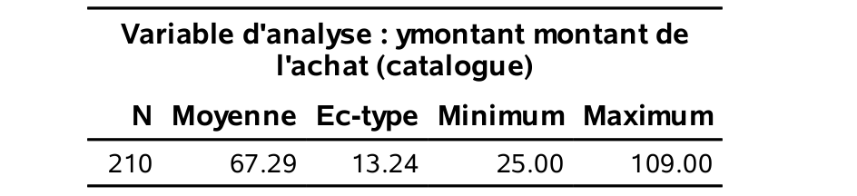
Nous allons travailler en termes de revenu net. Nous pouvons donc spécifier la matrice de gain du tableau 5.5 pour notre problème. Si on n’envoit pas de catalogue, notre gain est nul. Si on envoie le catalogue à un client qui n’achète pas, on perd 10$ (le coût de l’envoi). En revanche, notre revenu net est de 57$ (revenu moyen moins coût de l’envoi).
| observation | |||
|---|---|---|---|
| gain | \(Y=1\) | \(Y=0\) | |
| prédiction | \(\widehat{Y}=1\) | 57 | \(-10\) |
| \(\widehat{Y}=0\) | 0 | 0 |
L’appel de la macro manycut_cvlogistic, dont les paramètres sont expliqués dans le script, se fait de la manière suivante:
%manycut_cvlogistic(
yvar=yachat, xvar=x1 x2 x31 x32
x41 x42 x43 x44 x5 x6 x7 x8 x9 x10,
n=1000, k=10, ncv=10, dataset=train,
c00=0, c01=0, c10=-10, c11=57,
manycut=.05 .06 .07 .08 .09 .1 .11 .12 .13 .14 .15 .16 .17 .18 .5);Cette macro produit le tableau suivant. Il donne l’estimation du gain moyen (gain) pour différents points de coupures (cutpoint). Cette estimation provient d’une validation-croisée avec 10 groupes (k=10 dans la macro). En fait, on a répété 10 fois (ncv=10 dans la macro) la validation croisée avec 10 groupes et fait la moyenne des 10 répétitions afin d’avoir plus de précisions. Il faut essayer plusieurs points de coupure afin de trouver le meilleur.
On voit que le meilleur point de coupure, celui qui maximise le gain est 0,12. Avec ce point de coupure, on estime que le taux de bonne classification est de 0,707 et que la sensitivité est de 0,899. Ainsi, on estime qu’on va détecter 90% des clients qui achètent. 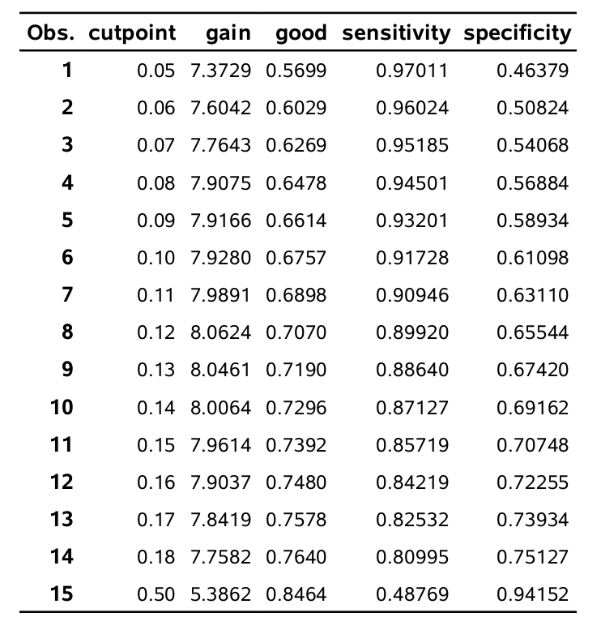
On est loin du point de coupure usuel de 0,5 (présenté à la dernière ligne). La raison est simple. Comme il est très coûteux de rater un client qui aurait acheté quelque chose, il est préférable d’envoyer le catalogue à plus de clients, quitte à ce que plusieurs d’entre eux n’achètent rien. En fait, le point de coupure de 0,5 donne un meilleur taux de bonne classification mais un gain moyen plus faible car on rate trop de clients qui achètent (la sensitivité est seulement de 48,8%). Travailler avec la matrice de gain permet de trouver le point de coupure optimal en incorporant des notions de coûts et profits.
Ici, nous avons ajusté un seul modèle, celui contenant uniquement les 10 variables de base et nous nous sommes attardés au choix du point de coupure pour l’assignation aux classes. Il est possible qu’un autre modèle, contenant par exemple des termes d’interactions, des termes quadratiques ou d’autres transformations des variables, soit supérieur à celui-ci. Le choix du modèle de prévision se fait donc souvent en deux étapes
- trouver les bonnes variables
- trouver le bon point de coupure.
Nous avons déjà vu des méthodes de sélections de variables au chapitre précédent. La section suivante reviendra sur ces méthodes dans le contexte de la régression logistique.
5.7 Sélection de variables en régression logistique
Les principes généraux, concernant la sélection de variables et de modèles, que nous avons vus au chapitre précédent sont toujours valides. Les critères \(\mathsf{AIC}\) et \(\mathsf{BIC}\) sont toujours disponibles puisqu’on estime le modèle par maximum de vraisemblance et les techniques générales de division de l’échantillon et de validation-croisée sont toujours valides. Nous allons voir comment appliquer spécifiquement ces techniques au cas de la régression logistique.
5.7.1 Recherche exhaustive de tous les sous-modèles
Rappelez-vous qu’avec une variable cible continue, nous avons utilisé avec la procédure reg pour faire une recherche du meilleur sous-ensemble de variables parmi tous les ensembles. Pour ce faire, on sélectionnait le meilleur modèle selon le \(R^2\) pour un nombre de variables fixe et il suffisait ensuite de trouver parmi ces variables le meilleur selon le critère d’information choisi.
Une stratégie similaire est possible avec la procédure logistic sauf qu’au lieu de trouver une suite de meilleurs modèles selon le \(R^2\), un autre critère est retenu. Il s’agit de la statistique du score (ou test des multiplicateurs de Lagrange) pour tester si l’ajout d’une variable est utile ou pas.
Ce paragraphe est plus technique et peut être omis. Parce qu’il n’y a pas de solution explicite pour les estimateurs du maximum de vraisemblance du modèle logistique, ajuster chacun de ces modèles est coûteux. La statistique de score, qui est basée sur la vraisemblance, ne nécessite que d’obtenir le maximum de vraisemblance sous l’hypothèse nulle; cela permet d’éviter des ajustements coûteux lors de comparaisons. L’algorithme employé par SAS utilise une méthode de recherche arborescente dite méthode de séparation et d’évaluation, qui ne nécessite pas de tester tous les modèles; à noter que la solution à \(k\) variables n’est pas nécessairement imbriquée dans celle à \(k+1\) variables. Lorsque la taille d’échantillon tend vers l’infini, la statistique du rapport de vraisemblance et la statistique de score sont équivalentes. Choisir le modèle selon la statistique du score équivaut alors à choisir le modèle qui maximise la vraisemblance (ou qui minimise la quantité \(-2 \ell\)). Ainsi, pour ce nombre fixé de variables, cela va donner le modèle avec le meilleur \(\mathsf{AIC}\) (et \(\mathsf{BIC}\)). Par conséquent, on peut trouver le meilleur modèle, globalement, en minimisant le \(\mathsf{AIC}\) (ou le \(\mathsf{BIC}\)) en faisant varier le nombre de variables. Par contre, cela n’est pas nécessairement vrai pour une taille d’échantillon finie. Le meilleur modèle selon le critère score n’est pas nécessairement celui qui maximise la vraisemblance. Mais en pratique, cette approximation est plus que suffisante et on va procéder comme on a fait avec la procédure reg.
À la section précédente, nous avons inclus les 10 variables de base (14 avec les indicatrices pour les variables catégorielles) dans notre exemple d’envoi ciblé. Nous allons ici faire une recherche de type all-subset parmi ces 14 variables. Le code est dans le fichier logit5_selection_variables.sas.
proc logistic data=train;
model yachat(ref='0') = x1 x2 x31 x32 x41-x44 x5-x10 /
selection=score best=1;
run;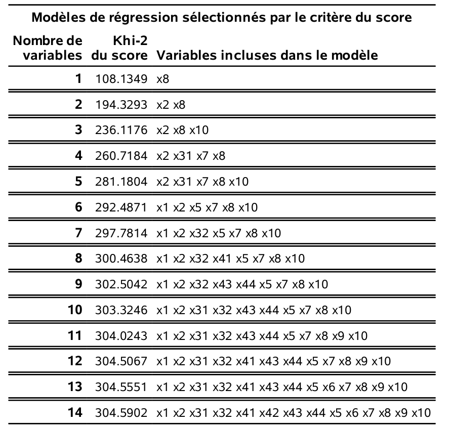
Le meilleur modèle avec une seule variable, selon la statistique du score, est celui avec x8, le meilleur avec deux variables est celui avec x2 et x8, et ainsi de suite. Nous voulons ensuite choisir parmi ces 14 modèles, celui qui minimise le \(\mathsf{AIC}\) ou le \(\mathsf{BIC}\). Le problème est que ces critères ne sont pas fournis (contrairement aux sorties de la procédure reg). La solution longue consiste à ajuster chacun de ces modèles, à extraire le \(\mathsf{AIC}\) et le \(\mathsf{BIC}\) et à ainsi trouver le meilleur modèle. Mais le faire manuellement en spécifiant plusieurs modèles est trop long. La macro logistic_aic_BIC_score, qui se trouve dans le fichier logit6_macro_all_subset.sas ajuste tous ces modèles automatiquement.
%logistic_aic_BIC_score(yvariable=yachat,
xvariables=x1 x2 x31 x32 x41-x44 x5-x10,
dataset=train, minvar=1, maxvar=14);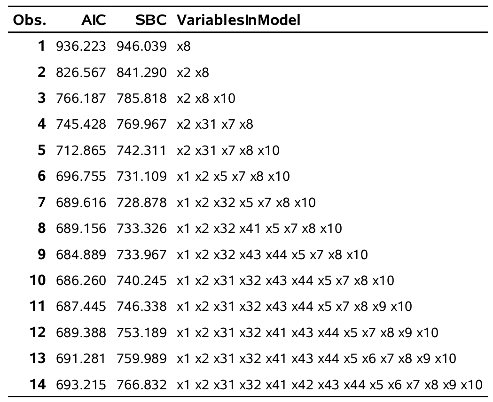
On voit que le meilleur modèle selon le \(\mathsf{AIC}\) a neuf variables, contre sept pour le \(\mathsf{BIC}\). Nous verrons plus loin, dans un tableau synthèse, comment auraient performé ces modèles s’ils avaient été utilisés pour cibler les clients restants.
5.7.2 Recherche séquentielle
Faire une recherche de tous les sous-modèles possibles devient impraticable lorsqu’il y a trop de variables en jeu. La procédure logistic permet aussi une recherche de type séquentielle classique. Ceci permet aussi d’utiliser la même approche en deux temps présentée au chapitre précédent. Dans un premier temps, on fait une recherche séquentielle pour sélectionner un nombre de variables qui sera assez petit afin qu’une recherche exhaustive de tous les sous-modèles soit possible. Dans un second temps, on fait cette recherche avec ces variables uniquement. Idéalement, on débute la sélection avec le modèle qui contient toutes les variables, soit start=n où \(n=104\) dans notre cas.
Si on inclut tous les termes quadratiques et les termes d’interactions d’ordre deux, nous avons 104 variables potentielles: c’est trop pour une recherche exhaustive.
Faisons d’abord une recherche séquentielle classique avec les 104 variables, en prenant 0.05 comme critère d’entrée et de sortie. Le code est
proc logistic data=train;
model yachat(ref='0') = x1 x2 x31 x32 x41 x42 x43 x44 x5 x6 x7 x8 x9 x10
cx2 cx6 cx7 cx8 cx9 cx10
i_x2_x1 i_x2_x5 i_x2_x31 i_x2_x32 i_x2_x41 i_x2_x42 i_x2_x43 i_x2_x44
i_x2_x7 i_x2_x6 i_x2_x8 i_x2_x9 i_x2_x10
i_x1_x5 i_x1_x31 i_x1_x32 i_x1_x41 i_x1_x42 i_x1_x43 i_x1_x44
i_x1_x7 i_x1_x6 i_x1_x8 i_x1_x9 i_x1_x10
i_x5_x31 i_x5_x32 i_x5_x41 i_x5_x42 i_x5_x43 i_x5_x44
i_x5_x7 i_x5_x6 i_x5_x8 i_x5_x9 i_x5_x10
i_x31_x41 i_x31_x42 i_x31_x43 i_x31_x44
i_x31_x7 i_x31_x6 i_x31_x8 i_x31_x9 i_x31_x10
i_x32_x41 i_x32_x42 i_x32_x43 i_x32_x44
i_x32_x7 i_x32_x6 i_x32_x8 i_x32_x9 i_x32_x10
i_x41_x7 i_x41_x6 i_x41_x8 i_x41_x9 i_x41_x10
i_x42_x7 i_x42_x6 i_x42_x8 i_x42_x9 i_x42_x10
i_x43_x7 i_x43_x6 i_x43_x8 i_x43_x9 i_x43_x10
i_x44_x7 i_x44_x6 i_x44_x8 i_x44_x9 i_x44_x10
i_x7_x6 i_x7_x8 i_x7_x9 i_x7_x10
i_x6_x8 i_x6_x9 i_x6_x10
i_x8_x9 i_x8_x10
i_x9_x10
/ selection=stepwise start=104, sle=.05 sls=.05;
run;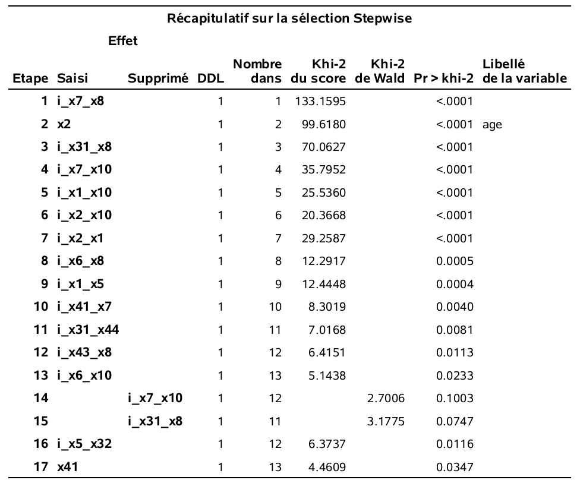
Il y a eu 17 étapes dans la recherche séquentielle débutant avec le modèle qui ne contient que l’ordonnée à l’origine. La variable i_x7_x8 est la première à être incluse, suivie de x2 et ainsi de suite. Le modèle final contient 13 variables.
En faisant une recherche séquentielle avec 0.5 comme comme critère d’entrée et de sortie, nous obtenons un sous-ensemble de 47 variables. On peut ensuite faire une recherche exhaustive de tous les sous-modèles avec ces 47 variables en utilisant la macro; le fichier logit5_selection_variables.sas contient le code commenté.
Le modèle qui a le plus petit \(\mathsf{AIC}\), soit 579,701, est un modèle avec 28 variables. Le \(\mathsf{BIC}\) mène à un modèle beaucoup plus parcimonieux qui inclut huit variables.
5.7.3 Algorithme glouton et critères alternatifs avec hpgenselect
Nous avons vu au chapitre précédent que la procédure glmselect permet de faire une recherche de type séquentielle avec un critère autre que la valeur-\(p\) du test de Wald pour rajouter ou retirer des variables explicatives du modèle final. Cette procédure est limitée à la régression linéaire, mais la procédure hpgenselect permet de faire une sélection de variables pour d’autres types de modèles, incluant la régression logistique.
Le code suivant fait une recherche séquentielle en ajoutant ou retranchant les variables selon leur valeur-\(p\) (select=sl), la seule méthode disponible pour l’instant. En revanche, le modèle final peut-être choisi selon d’autres critères.
proc hpgenselect data=train;
class x3(ref='3' split) x4(ref='5' split);
model yachat(ref='0')=x1|x2|x3|x4|x5|x6|x7|x8|x9|x10 @2
x2*x2 x6*x6 x7*x7 x8*x8 x9*x9 x10*x10 /
link=logit distribution=binary;
selection method=stepwise(select=sl choose=sbc);
run;Avec le critère \(\mathsf{BIC}\), on obtient 12 variables tandis que choose=aic donne 13 variables (seule la variable x41 est ajoutée). Il s’agit des mêmes variables que celles sélectionnées par une sélection séquentielle classique en prenant 0,05 comme critère d’entrée et de sortie.
5.8 Performance des différents modèles pour l’exemple des clients cibles
Nous allons conclure, pour l’instant, notre exemple dans cette section, en évaluant la performance de différentes stratégies. Le critère de performance sera le suivant : revenu net de la stratégie si elle était appliquée aux 100 000 clients restants. Pour chacun des 100 000 clients à catégoriser, nous allons calculer la quantité suivante :
- Si le client n’est pas ciblé pour l’envoi d’un catalogue par le modèle, alors le revenu est nul.
- Si le client est ciblé pour l’envoi d’un catalogue par le modèle et qu’il n’achète rien, le revenu est de \(-10\)$ (le coût de l’envoi).
- Si le client est ciblé pour l’envoi d’un catalogue par le modèle et qu’il achète quelque chose, le revenu est de (
ymontant\(-10\))$, c’est-à-dire, le montant qu’il dépense moins le \(10\)$ du coût de l’envoi.
Pour une stratégie donnée, chaque individu n’appartient qu’à une seule des catégories. Le revenu net de la stratégie est la somme des revenus pour les 100 000 clients. Parmi ces derniers, 23 179 auraient acheté si on leur avait envoyé le catalogue et ces clients auraient généré des revenus de 1 601 212$. Si on enlève le coût des envois (100 000 X 10$ = 1 000 000$), on obtient que la stratégie de référence permet un revenu net de 601 212$.
Nous allons investiguer deux types de stratégies :
- une basée sur la régression logistique seulement en utilisant le modèle pour prévoir l’achat et
- une basée sur la combinaison de la régression logistique et la régression linéaire en utilisant un modèle pour prévoir l’achat et un autre pour prévoir le montant.
5.8.1 Stratégies en utilisant seulement la régression logistique
Dans ce cas, nous allons estimer la probabilité d’achat avec un modèle de régression logistique. Nous allons ensuite trouver le meilleur point de coupure, avec une matrice de gain adéquatement choisie, afin d’avoir une règle d’assignation optimale. Nous avons déterminé des modèles potentiels à la section précédente. De plus, nous avons déjà vu comment trouver le meilleur point de coupure en spécifiant une matrice de gain, afin de maximiser le gain moyen à partir de la matrice de gain du tableau 5.5. Nous allons donc trouver le meilleur point de coupure pour quelques-uns des modèles choisis à la section précédente, pour ensuite évaluer le revenu net de ces modèles.
Il faut encore une fois bien comprendre qu’en pratique, on ne pourrait pas faire cette comparaison, car on ne sait pas d’avance si les clients futurs vont acheter ou non. Mais dans cet exemple, les variables yachat et ymontant sont fournies pour ces 100 000 clients afin qu’on puisse voir ce qui se serait passé avec les différentes stratégies.
La stratégie de référence est celle qui consiste à envoyer le catalogue aux 100 000 clients sans les sélectionner. Le tableau qui suit montre des statistiques pour les variables ymontant et yachat pour les 100 000 clients à scorer. Le tableau 5.6 résume la performance des différentes stratégies basées exclusivement sur le modèle logistique.
Table:
| modèle | # variables | point de coupure | sensibilité | taux de faux positifs | taux de bonne classification | revenu net |
|---|---|---|---|---|---|---|
|
|
— | — | 100 | 76.8 | 23.2 | 601212 |
|
|
14 | 0.12 | 89 | 56.2 | 70.9 | 940569 |
|
|
104 | 0.08 | 85.8 | 52.6 | 74.6 | 937150 |
| (d), (e) | 13 | 0.14 | 85.7 | 49.1 | 77.5 | 969350 |
|
|
12 | 0.19 | 81 | 44.7 | 80.4 | 943935 |
|
|
8 | 0.16 | 86 | 48.1 | 78.3 | 985069 |
|
|
28 | 0.15 | 83.5 | 47.4 | 78.8 | 952672 |
5.8.2 Stratégies alternatives
Nous venons tout juste d’étudier des stratégies qui consistent essentiellement, à estimer \({\mathsf P}\left(\texttt{yachat}=1\right)\) et un point de coupure afin de décider à qui envoyer le catalogue en partant du postulat que tous les clients dépensent le même montant; le tout est basé uniquement sur la régression logistique. Le revenu moyen peut être estimé à partir de l’équation \[{\mathsf E}\left(\texttt{ymontant}\right) = {\mathsf E}\left(\texttt{ymontant} \mid \texttt{yachat}=1\right) {\mathsf P}\left(\texttt{yachat }=1\right), \] c’est-à-dire, la moyenne du montant dépensé est égale à la moyenne du montant dépensé étant donné qu’il y a eu achat, fois la probabilité qu’il ait eu achat. Une autre stratégie possible consiste donc à développer deux modèles : un pour \({\mathsf E}\left(\texttt{ymontant} \mid \texttt{yachat}=1\right)\) et un autre pour \({\mathsf P}\left(\texttt{yachat}=1\right)\) et à les combiner afin d’obtenir des prévisions du montant dépensé.
Nous avons déjà développé des modèles de régression linéaire pour \({\mathsf E}\left(\texttt{ymontant} \mid \texttt{yachat}=1\right)\) au chapitre précédent et nous venons de développer des modèles de régression logistique pour \({\mathsf P}\left(\texttt{yachat}=1\right)\) dans ce chapitre. Nous avons donc tous les ingrédients pour implanter cette stratégie.
Nous allons cibler les clients dont la prévision du montant dépensé est plus grande que 10$ (le coût de l’envoi du catalogue).
Les possibilités de modèles sont nombreuses. Par exemple, si on a cinq modèles potentiels pour \({\mathsf E}\left(\texttt{ymontant} \mid \texttt{yachat}=1\right)\) et cinq pour \({\mathsf P}\left(\texttt{yachat}=1\right)\), il y a 25 combinaisons possibles. Ici, nous allons seulement présenter les résultats pour deux combinaisons :
- pour \(\texttt{ymontant}\), nous allons utiliser les variables choisies par
glmselectavec les optionsselect=aic, choose=bic, tandis que pour \(\texttt{yachat}\), nous allons utiliser les variables choisies par la procédure séquentielle suivie d’une recherche exhaustive avec le critère BIC - à la fois pour \(\texttt{ymontant}\) et \(\texttt{yachat}\), nous allons utiliser les variables choisies en faisant une sélection séquentielle classique (tests-\(t\)) avec critères d’entrée et de sortie fixés à 0,05.
Pour obtenir les prévisions, nous allons estimer conjointement les modèles pour \({\mathsf E}\left(\texttt{ymontant} \mid \texttt{yachat}=1\right)\) et pour \({\mathsf P}\left(\texttt{yachat}=1\right)\) avec un modèle Tobit de type 2 (aussi appelé modèle Heckit), dont une brève description est donnée dans la section 5.8.3. L’avantage de l’estimation simultanée est que l’on a pas à sélectionner le point de coupure, puisque l’on enverra le catalogue uniquement si le montant prédit pour \({\mathsf E}\left(\texttt{ymontant}\right)\) (non-conditionnel) est supérieur à 10$. Les résultats du modèle Tobit sur l’échantillon de validation sont rapportés dans le tableau 5.7.
| modèle | sensibilité | FP (%) | bonne classification (%) | revenu net |
|---|---|---|---|---|
|
|
88.3 | 50.9 | 76.1 | 997 238 |
|
|
86.3 | 49.9 | 76,9 | 977 422 |
Il s’avère qu’on aurait eu des performances semblables aux stratégies basées uniquement sur la régression logistique vues à la sous-section précédente. La première combinaison aurait tout de même produit un revenu net de 997 238$, supérieur au revenu net de 985 069$, qui était le meilleur trouvé à la sous-section précédente.
Pour conclure cet exemple, il s’avère donc que la régression logistique permet d’effectuer un bon ciblage des clients potentiels afin de maximiser les revenus. L’approche générale consistant à obtenir des prévisions pour \({\mathsf P}\left(\texttt{yachat}=1\right)\) et ensuite trouver le meilleur point de coupure est très générale. D’autres types de modèles (arbre de classification, forêt aléatoire, réseau de neurones) pourraient être utilisés à la place de la régression logistique.
Nous reviendrons une dernière fois sur cet exemple dans le chapitre traitant des données manquantes. Nous verrons alors comment procéder si des valeurs manquantes sont présentes dans les variables explicatives.
5.8.3 Modèle Tobit de type 2
Cette partie est plus technique et peut être omise.
Il ne serait pas justifié d’ajuster séparément les deux modèles pour \({\mathsf E}\left(\texttt{ymontant} \mid \texttt{yachat}=1\right)\) et \({\mathsf P}\left(\texttt{yachat}=1\right)\) et de calculer les prévisions en prenant le produit: \({\mathsf E}\left(\texttt{ymontant} \mid \texttt{yachat}=1\right){\mathsf P}\left(\texttt{yachat}=1\right)\). Cela provient du fait que le modèle pour \({\mathsf E}\left(\texttt{ymontant} \mid \texttt{yachat}=1\right)\) aurait été estimé seulement avec les clients qui ont acheté quelque chose et qu’ensuite on l‘appliquerait (au moment de calculer les prévisions) à la fois aux clients qui vont acheter et à ceux qui ne vont pas acheter. Il y a donc un biais de sélection dans l’échantillon qui a servi à ajuster le modèle au départ. Une manière de contourner ce problème est d’ajuster conjointement les deux modèles. Le modèle de Tobit de type 2 permet de faire cela. Ce modèle est basé sur l’hypothèse que les deux variables observées (\(Y_1\) et \(Y_2\)) proviennent de deux variables latentes non observées (\(Y_1^{\star}\) et \(Y_2^{\star}\)), où
\[\begin{align*}
Y_1 = \begin{cases}
1 & \text{ si } Y_1^{\star} \ge 0, \\
0 & \text{ si } Y_1^{\star} < 0,
\end{cases}
\qquad \qquad
Y_2 = \begin{cases}
Y_2^{\star} & \text{ si } Y_1^{\star} \ge 0, \\
0 & \text{ si } Y_1^{\star} < 0.
\end{cases}
\end{align*}\]
Dans notre exemple, \(Y_1\) correspond à \(\texttt{yachat}\) et \(Y_2\) à \(\texttt{ymontant}\).
Ce qui lie les deux équations est le fait qu’on suppose que les variables sont binormales: les deux termes d’erreur sont de loi normale et sont corrélés, \(\boldsymbol{\varepsilon} \sim \mathcal{N}_2(\boldsymbol{0}_2, \boldsymbol{\Sigma})\). Les variables dépendantes observées sont :
\[\begin{align*}
Y_{1}^{\star} &= \beta_{01} + \beta_{11} X_{11} + \cdots + \beta_{1p}X_{p1} + \varepsilon_{1}\\
Y_{2}^{\star} &= \beta_{02} + \beta_{12} X_{12} + \cdots + \beta_{1p}X_{q2} + \varepsilon_{2}
\end{align*}\]
Notez que les variables explicatives ne sont pas nécessairement les mêmes dans les deux équations. En estimant conjointement les deux équations, on élimine le biais de sélection mentionné plus haut. La procédure qlim permet d’estimer ce modèle. Cependant, qlim ne fait pas de sélection de variables. Le choix des variables doit être fait avant avec les méthodes qu’on a vues. De plus, pour être précis, le modèle Tobit ajuste un modèle probit et non logistique à la variable binaire.
5.9 Extensions du modèle de régression logistique à plus de deux catégories
Supposons que la variable \(Y\) que vous cherchez à modéliser est une variable catégorielle pouvant prendre trois valeurs ou plus. Voici quelques exemples :
- Destination de vacances l’année dernière (Québec, États-Unis, ailleurs).
- Si les élections avaient lieu aujourd’hui au Québec, pour quel parti voteriez-vous (PLQ, PQ, CAQ, QS).
- Combien de fois êtes-vous allé au cinéma l’année dernière: moins de cinq fois (\(\texttt{1}\)), entre cinq et 10 fois (\(\texttt{2}\)), ou plus de 10 fois (\(\texttt{3}\)).
- Quelle importance accordez-vous au service après-vente? Un parmi « pas important » (\(\texttt{1}\)), « peu important »(\(\texttt{2}\)), « moyennement important » (\(\texttt{3}\)), « assez important » (\(\texttt{4}\)), « très important » (\(\texttt{5}\)).
Dans les deux premiers exemples, la variable réponse \(Y\) est nominale (elle n’a pas d’ordre) alors qu’elle est ordinale dans les deux derniers. Pour une variable ordinale, le modèle logit multinomial peut être utilisé mais il existe d’autres possibilités comme le modèle logit cumulé. Nous couvrirons ces deux modèles.
5.9.1 Régression logistique multinomiale
Afin de simplifier la notation, on suppose qu’il y a une seule variable explicative \(X\) à disposition et que la variable \(Y\) représente trois catégories, une parmi 0, 1 et 2.
En régression logistique, \(Y\) est une variable binaire qui vaut soit 0, soit 1 et la probabilité de succès est \[\begin{align*} \ln\left(\frac{p_i}{1-p_i}\right) = \beta_0 + \beta_1 X_{i}, \qquad p_i = {\mathsf P}\left(Y_i=1 \mid X_i\right) = \mathrm{expit}(\beta_0 + \beta_1X_i). \end{align*}\] Dans ce modèle logistique, \(\ln(p_i)-\ln(1-p_i) = \ln\{{\mathsf P}\left(Y_i=1 \mid X_i\right)\} - \ln\{{\mathsf P}\left(Y_i=0 \mid X_i\right)\}\) peut être vu comme étant le logit de la catégorie 1 en utilisant 0 comme catégorie de référence. Le modèle logistique multinomial procède de même en fixant une catégorie de référence et en modélisant le logit de chacune des autres catégories par rapport à la catégorie de référence. Avec \(K+1\) catégories et en choisissant la catégorie 0 comme référence, le modèle devient \[\begin{align*} \ln\left(\frac{p_{i1}}{p_{i0}}\right) = \beta_{01} + \beta_{11} X_i, \, \ldots, \, \ln\left(\frac{p_{iK}}{p_{i0}}\right) = \beta_{0K} + \beta_{1K} X_i, \end{align*}\] où \(p_{ik} = {\mathsf P}\left(Y_i=k \mid X_i\right)\) \((k=0, \ldots, K)\). Comme en régression logistique, on peut facilement exprimer ce modèle en termes des différentes probabilités, \[\begin{align*} p_{i0} &= {\mathsf P}\left(Y_i=0 \mid X_i\right) = \frac{1}{1+ \sum_{j=1}^K\exp(\beta_{0j}+\beta_{1j}X_i)}\\ p_{ik} &= {\mathsf P}\left(Y_i=k \mid X_i\right) = \frac{\exp(\beta_{0k}+\beta_{1k}X_i)}{1+ \sum_{j=1}^K\exp(\beta_{0k}+\beta_{1k}X_i)}, \qquad k =1, \ldots, K. \end{align*}\] On voit facilement que la somme des probabilités égale 1, c’est-à-dire \(p_{i0} + \cdots + p_{iK} = 1\). En fait, le modèle logit multinomial ne fait que combiner plusieurs logit dans un seul modèle. L’interprétation des paramètres se fait comme en régression logistique sauf qu’il faut y aller équation par équation.
Destination vacances. Le fichier logit6.sas7bdat contient 100 observations obtenues par voie de sondage auprès d’adultes âgés de 18 à 45 ans. Le fichier contient les réponses aux questions suivantes:
y1: quelle a été votre destination vacances l’année dernière: Québec (\(\texttt{0}\)), États-Unis (\(\texttt{1}\)) ou ailleurs (\(\texttt{2}\))?y2: combien de fois êtes-vous allé au cinéma l’année dernière: moins de 5 fois (\(\texttt{1}\)), entre 5 et 10 fois (\(\texttt{2}\)), ou plus de 10 fois (\(\texttt{3}\)).x: âge (en année) du répondant.
Nous allons modéliser la destination vacance \(Y_1\) à l’aide d’une régression logistique multinomiale avec l’âge comme variable explicative.
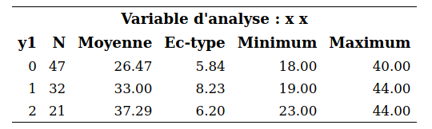
On voit que les gens qui ont passé leurs vacances au Québec (\(Y_1=0\)) ont 26.5 ans en moyenne. Ils sont plus jeunes que ceux qui ont passé leurs vacances aux États-Unis (âge moyen de 33 ans). Finalement, ceux dont la destination vacances était ailleurs sont les plus vieux avec une moyenne de 37.3 ans.
Pour le modèle logit multinomial, nous allons prendre \(Y_1=0\) comme catégorie de référence. Les commandes sont
proc logistic data=multi.logit6 ;
model y1(ref='0') = x / clparm=pl clodds=pl expb link=glogit;
run; L’option link=glogit spécifie le type de fonction de lien, ici celle du modèle logistique multinomial.
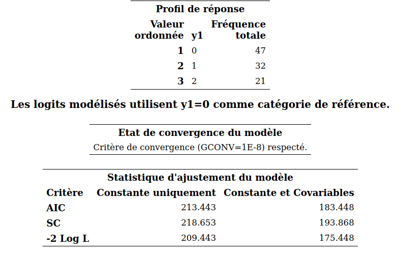
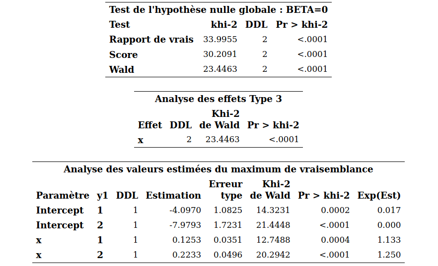
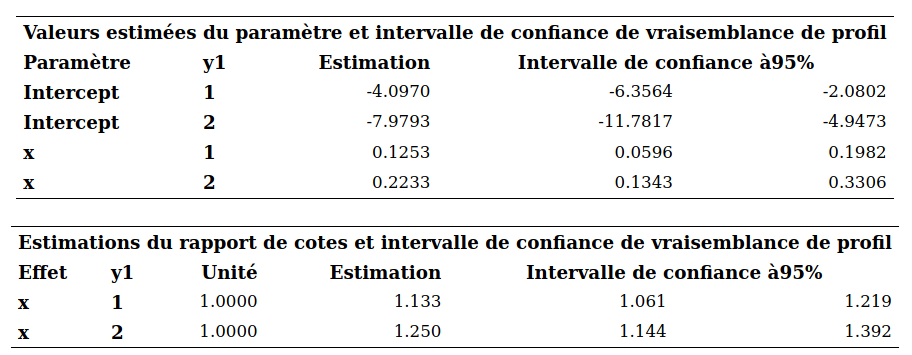
Comme il y a trois catégories pour la variable dépendante, il y a deux équations pour le modèle ajusté, \[\begin{align*} \ln \left\{\frac{{\mathsf P}\left(Y_{1i}=1 \mid X_i\right)}{{\mathsf P}\left(Y_{1i}=0 \mid X_i\right)} \right\} = -4.10 + 0.13X_i, \qquad \qquad \ln \left\{\frac{{\mathsf P}\left(Y_{1i}=2 \mid X_i\right)}{{\mathsf P}\left(Y_{1i}=0 \mid X_i\right)} \right\} = -7.98+0.22X_i. \end{align*}\]
Plus l’âge du répondant augmente, plus la probabilité qu’il ait passé ses vacances aux États-Unis par rapport au Québec augmente. En fait, pour chaque augmentation de 1 de l’âge, le rapport des cote pour \(Y_1=1\) par rapport à \(Y_1=0\) est multipliée par \({1.133}=\exp({0.1253})\). Cette valeur est donnée dans la dernière colonne du tableau. De plus, cet effet est significatif car la valeur-\(p\) est inférieure à \(10^{-4}\).
De même, plus l’âge du répondant augmente, plus la probabilité qu’il ait passé ses vacances ailleurs qu’aux États-Unis ou au Québec par rapport au Québec augmente. En fait, pour chaque augmentation de l’âge d’un an, le rapport des cote pour \(Y_1=1\) par rapport à \(Y_1=0\) est multiplié par \({1.25}\). Cet effet est également statistiquement significatif.
Nous venons donc de comparer chacune des catégories \(Y_1=1\) et \(Y_1=2\) à la catégorie de référence \(Y_1=0\). Pour une comparaison directe entre \(Y_1=1\) et \(Y_1=2\), il suffit de changer la catégorie de référence et de resoumettre le programme SAS.
5.9.2 Régression logistique cumulative à cotes proportionnelles
Si les modalités de la réponse sont ordinales, la régression logistique multinomiale est toujours appropriée. Il peut néanmoins être préférable d’utiliser un modèle qui utilise l’ordre des modalités pour obtenir un modèle plus facile à interpréter et plus parcimonieux. Le modèle de régression logistique cumulative à cotes proportionnelles est un simplification sous l’hypothèse que les cotes sont proportionnelles.
Supposons que la variable \(Y\) est ordinale et peut prendre les \(K+1\) valeurs ordonnées de la plus petite à la plus grande selon les catégories de \(Y\) (\(0, 1, 2, \ldots, K\)). Supposons que l’on dispose de \(p\) variables explicatives \(X_1, \ldots, X_p\).
Soit \(p_{ik}={\mathsf P}\left(Y_i \mid X_{i1}, \ldots, X_{ip}\right)\) (\(k=0, 1, \ldots, K\)) la probabilité que \(Y_{ik}\) prenne la valeur \(k\). On dénote la fonction de survie \[S_{ij}=\sum_{k=j}^K p_{ik}= {\mathsf P}\left(Y_{i} \geq j\mid X_{i1}, \ldots, X_{ip}\right), \qquad j=1, \ldots, K. \] La quantité \(S_{ij}\) est la probabilité que \(Y_i\) soit plus grand ou égal à \(j\); \(S_{i0}\) est égal à 1 et \(S_{ik} = {\mathsf P}\left(Y_i=K \mid X_{i1}, \ldots, X_{ip}\right)=p_{iK}\).
Le modèle logistique cumulé spécifie que \[\begin{align*} \ln \left( \frac{S_{ij}}{1-S_{ij}}\right) = \beta_{0j} + \beta_1 X_{i1} + \cdots + \beta_p X_{ip}, \qquad \qquad j=1, \ldots, K. \end{align*}\]
Il y a donc \(K-1\) équations logistiques. Les paramètres quantifiant les effets des variables explicatives, \(\beta_1, \ldots, \beta_K\) sont les mêmes pour chacune des log-cotes, mais il y a une ordonnée à l’origine différente par log de rapport de cote. Par conséquent, pour modéliser une variable ordinale \(Y\) ayant \(K+1\) valeurs possibles avec p variables explicatives, le modèle cumulatif logistique utilise \(p + K\) paramètres. Le modèle logit multinomial, qui peut également être utilisé pour les données ordinales, utilise \(p\cdot (K+1)\) paramètres. Le modèle multinomial ordonné est donc plus parcimonieux et, pour autan qu’il soit approprié, mènera à des estimations des paramètres plus précises qu’avec le modèle de régression logistique multinomiale. Les deux modèles sont identiques au modèle de régression logistique si la variable ordinale a deux modalités.
La cote \(S_{ij}/(1-S_{ij})\) mesure à quel point il est plus probable que \(Y_i\) prenne une valeur plus grande ou égale à \(j\) par rapport à une valeur plus petite que \(j\), viz. \[\begin{align*} \frac{S_{ij}}{1-S_{ij}} = \exp( \beta_{0j} + \beta_1X_{i1} + \cdots + \beta_p X_{ip}). \end{align*}\] Dans cet exemple, aucune fonction autre qu’additive en \(X\), ni aucune interaction n’est présente. Si le paramètre \(\beta_j\) est positif, cela indique que plus \(X_j\) prend une valeur élevée, plus la variable \(Y\) a tendance à prendre aussi une valeur élevée. Inversement, si le paramètre \(\beta_j\) est négatif, cela indique que plus \(X_j\) prend une valeur élevée, plus la variable \(Y\) a tendance à prendre une valeur basse. Plus précisément, pour chaque augmentation d’une unité de \(X_j\), la cote \(S_k/(1-S_k)\) est multipliée par \(\exp(\beta_j)\), peu importe la valeur de \(Y\). Ainsi, la cote d’être dans une catégorie plus élevée, par rapport à une catégorie moins élevée, est multipliée par \(\exp(\beta_j)\). En terme de probabilités cumulées d’excéder \(k\), \[\begin{align*} S_{ik} = {\mathsf P}\left(Y_i \geq k \mid X_{i1}, \ldots, X_{ip}\right) = \mathrm{expit}(\beta_{0k} + \beta_1 X_{i1} + \cdots + \beta_p X_{ip}), \qquad j =1, \ldots, K. \end{align*}\] En utilisant ces expressions, on peut obtenir la probabilité de chaque catégorie, \[\begin{align*} {\mathsf P}\left(Y_i = k \mid X_{i1}, \ldots, X_{ip}\right) ={\mathsf P}\left(Y_i \geq k \mid X_{i1}, \ldots, X_{ip}\right) -{\mathsf P}\left(Y_i \geq k+1 \mid X_{i1}, \ldots, X_{ip}\right) = S_{k} - S_{k+1}. \end{align*}\]
Nous considérons maintenant la variable \(Y_2\) du fichier logit6.sas7bdat, qui donne le nombre de visites au cinéma. Pour cet exemple, nous allons chercher à modéliser \(Y_2\) à l’aide de \(X\) (âge) en utilisant le modèle multinomial cumulé à cotes proportionnelles.
## `summarise()` ungrouping output (override with `.groups` argument)| y2 | n | moyenne | écart-type | minimum | maximum |
|---|---|---|---|---|---|
| 1 | 44 | 33.5 | 7.23 | 18 | 44 |
| 2 | 38 | 30.4 | 8.16 | 18 | 44 |
| 3 | 18 | 25.1 | 6.58 | 18 | 39 |
Ainsi, les répondants qui sont allés moins de cinq fois au cinéma ont en moyenne 33.5 ans, ceux qui sont allés entre cinq et 10 fois ont 30.4 ans en moyenne, et ceux qui sont allés plus de 10 fois ont 25.1 ans en moyenne. Il y a une progression et on voit que les répondants plus jeunes vont plus souvent au cinéma.
Nous utilisons exactement le même programme que pour une régression logistique habituelle. Si la variable \(Y\) prend plus de deux valeurs, SAS utilisera automatiquement le modèle de régression multinomiale cumulé.
proc logistic data=multi.logit6 descending;
model y2 = x / clparm=pl clodds=pl expb;
run;L’option descending impose la paramétrisation discutée précédemment. Sans cette option, ce serait plutôt les probabilités de prendre une valeur plus petite, par rapport à une plus grande qui serait modélisée. Le modèle est le même, mais les signes des paramètres des variables explicatives seraient inversés.
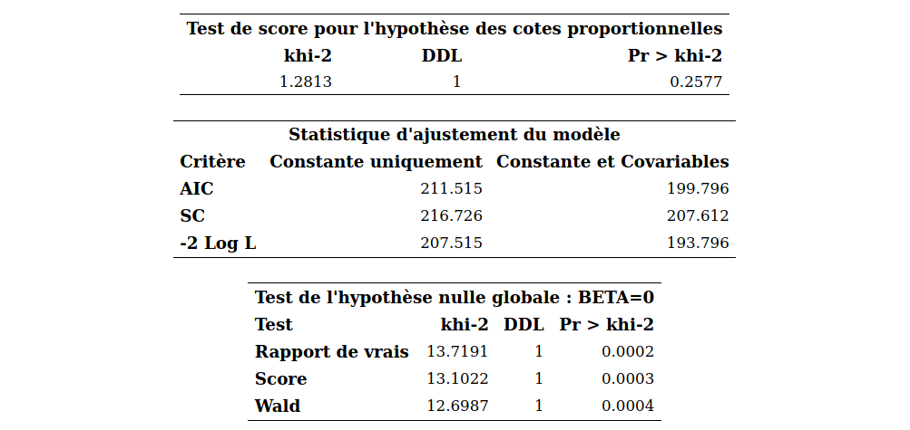
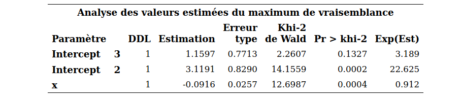
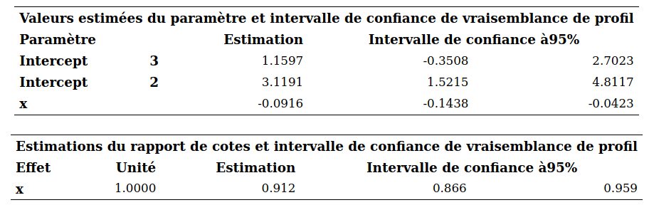
Avant toute chose, il faut s’assurer que le modèle est approprié. Rappelez-vous que l’une des hypothèses de ce modèle est que les effets des variables explicatives sont les mêmes pour chaque équation. Le tableau « Test de score pour l’hypothèse des cotes proportionnelles » est un test de l’hypothèse nulle
- \(\mathcal{H}_0\) : l’effet de chaque variable est le même pour les \(K\) logit du modèle multinomial logistique, soit \(\beta_{11} = \cdots =\beta_{1K}\), \(\ldots\), \(\beta_{p1} = \cdots =\beta_{pK}\).
Une très petite valeur-\(p\) (rejet de \(\mathcal{H}_0\)) pour ce test serait une indication que le modèle de régression multinomiale ordinale n’est pas approprié. Comme la valeur-\(p\) est 0.2577 ici, on ne rejette pas \(\mathcal{H}_0\) et il n’y a pas lieu de douter de cette hypothèse. On peut donc aller de l’avant et interpréter le modèle.
Ici, l’effet estimé de l’âge (\(X\)) est \(-{0.0916}\) et ce paramètre est significativement différent de zéro (valeur-\(p\) de 0.0004). Rappelez-vous que \(Y_2\) représente le nombre d’entrées au cinéma dans la dernière année.
Ainsi, plus l’âge augmente, plus \(Y_2\) a tendance à prendre une petite valeur, c’est-à-dire, plus la personne a tendance à aller moins souvent au cinéma. Plus précisément, lorsque l’âge augmente de 1, la cote d’être dans une catégorie plus élevée de \(Y_2\), par rapport à une catégorie plus basse, est multipliée par 0.912 (la cote diminue donc et aussi la probabilité d’être dans une catégorie plus élevée).